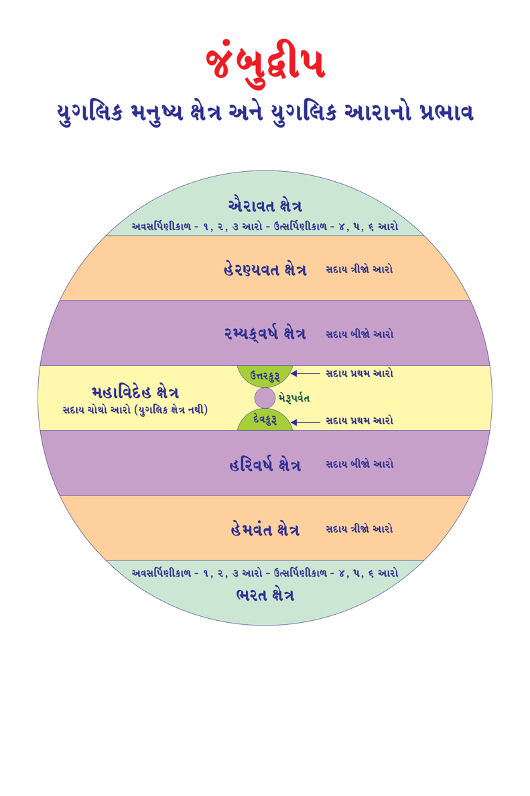

This book Unicode and EPUB Converted by Parth Shah (myself) free of charge as Gyaanseva. You can contact on caparthdshah@gmail.com for further details. You may quote reference "Jain Website"
મનુષ્ય જીવ - 171 : વાસુદેવ - બળદેવ - 2 :
સર્વજનોના આંખોના પ્યારા હોય છે. ક્યારેય ન થાકનાર પ્રવાહ યુક્ત બળશાળી હોવાથી ઓઘબલિ હોય છે. પોતાના સમયના દરેક પુરુષોના બળનું અતિક્રમણ કરવાથી અતિબલિ હોય છે. મહાન પ્રશસ્ત એટલે કે શ્રેષ્ઠ બળવાળા હોવાથી તેઓ મહાબલી હોય છે. નિરુપક્રમ આયુષ્યના ધારક હોવાથી અનિહત હોય છે. એટલે કે, બીજા દ્વારા થતી ઘાત અથવા મરણથી રહિત હોય છે. મલ્લયુદ્ધમાં કોઇ તેને પરાજિત કરી શકતા ન હોવાથી અપરાજિત હોય છે. મોટાં મોટાં યુદ્ધમાં શત્રુના મર્દન કરવાથી શત્રુમર્દન હોય છે.
આજ્ઞા અથવા સેવા સ્વીકાર કરનારા પર કૃપા કરનારા હોય છે. તેઓ માત્સર્ય (ઇર્ષ્યા) રહિત હોય છે, કારણ કે બીજાના ગુણોને પણ ધારણ કરી લેનારા હોય છે. મન, વચન અને કાયાની સ્થિર પ્રવૃત્તિના કારણે તેઓ અચપલ (ચપળતા રહિત) હોય છે. કારણ વગર પ્રચંડ ક્રોધ કરતાં નથી. સિમિત વાર્તાલાપ અને મૃદુ હાસ્યથી યુક્ત હોય છે. ગંભીર, મધુર અને પરિપૂર્ણ સત્ય વચન બોલે છે. અધીનતા સ્વીકાર કરનાર પર વાત્સલ્ય ભાવ રાખે છે. શરણમાં આવનારા રક્ષક હોય છે.
વજ્ર, સ્વસ્તિક, ચક્ર વગેરે લક્ષણોથી અને તલ, મશા વગેરે વ્યંજનોની ગુણોથી સંયુક્ત હોય છે. શરીરના માન, ઉન્માન અને પ્રમાણથી પરિપૂર્ણ હોય છે.
63
Page 323
જૈનમ્ જયતિ શાસનમ્
મનુષ્ય જીવ - 172 : વાસુદેવ - બળદેવ - 3 :
મન, ઉન્માન અને પ્રમાણ, તે માપ આ પ્રમાણે હોય છેઃ પાણીથી ભરેલા હોડીમાં બેસીને તેમાંથી બહાર નીકળતું પાણી જો દ્રોણ (એક જાતનું માપ છે) પ્રમાણ હોય તો તે પુરુષ માન પ્રાપ્ત કહેવાય. ત્રાજવા પર બેઠેલા પુરુષનું વજન અર્ધભાર પ્રમાણ હોય તો તે પુરુષ ઉન્માન પ્રાપ્ત કહેવાય. શરીરની ઊંચાઇ પોતાના અંગુલથી જો 108 અંગુલ પ્રમાણ હોય તો તે પ્રમાણ પ્રાપ્ત કહેવાય છે). તેઓ જન્મ જાત સર્વ અંગ સુંદર શરીરના ધારક હોય છે. કર્તવ્ય પાલનમાં આળસ રહિત કર્મઠ હોય છે. ઉદ્દંડ પુરુષો પર પ્રચંડ દંડનીતિના ધારક હોય છે તેમજ ગંભીર હોય છે.
બળદેવ તાલવૃક્ષના ચિન્હવાળી ધ્વજા વાળા અને વાસુદેવ ગરુડના ચિન્હવાળી ધ્વજાના ધારક હોય છે. તેઓ કાન સુધી મહાધનુષ ચઢાવનારા હોય છે. રણભૂમિમાં તેમના પ્રહારોનો સામનો કરવો અશક્ય હોય છે. તેઓ મહારત્નો, વજ્ર (હીરા)ને અંગૂઠા અને તર્જની (ટચલી આંગળી)થી ચૂર્ણ (પાવડર) કરી દેતા હોય છે. વાસુદેવ 6 ખંડમાંથી 3 ખંડના સ્વામી હોય છે. એટલે તેઓ અર્ધચક્રી પણ કહેવાય છે. ત્રણ ખંડમાં ખંડ નં. 1, 2 અને 6 ઉપર વિજય મેળવે છે.
રાજકુળો અને રાજવંશોના તિલક સમાન હોય છે. કોઇથી ન જીતાય તેવા અજિત અને અજેય રથવાળા હોય છે. બળદેવ હળ અને મુશળના ધારક હોય છે. વાસુદેવ કણક (શારંગ ધનુષ્ય), પાંચજન્ય શંખ, સુદર્શન ચક્ર, કૌમુદી ગદા, શક્તિ અને નંદકનામના ખડગના ધારક હોય છે.
64
Page 324
જૈન વિજ્ઞાન
મનુષ્ય જીવ - 173 : વાસુદેવ - બળદેવ - 4 :
પ્રવર, ઉજ્જ્વળ, સુકાંત, વિમલ કૌસ્તુભ મણિયુક્ત મુકુટ(મુગટ)ના ધારક હોય છે. તેમનું મુખ કુંડળોમાં લગાવેલા મણિઓના પ્રકાશથી યુક્ત હોય છે. નેત્ર કમળ જેવા હોય છે. કંઠથી લઇને વક્ષઃસ્થળ (છાતી) સુધી એકાવલી હજારથી શોભતું હોય છે. વક્ષઃસ્થળ શ્રીવત્સ (શ્રીવત્સ શ્રી તીર્થંકર પરમાત્માને પણ હોય છે આપને જિનપ્રતિમામાં જોવા મળશે) સુલક્ષણથી ચિન્હિત હોય છે. તેમના વક્ષઃસ્થળ ઉપર દરેક ઋતુમાં ઉત્પન્ન થનારા સુગંધીત પુષ્પોથી બનાવેલી લાંબી, શોભાયુક્ત, વિકસિત, પાંચ વર્ણના શ્રેષ્ઠ પુષ્પોની માળાથી વક્ષઃસ્થળ સદાય શોભાયમાન હોય છે.
તેમના સુંદર અંગ, પ્રત્યંગ, 108 લક્ષણોથી યુક્ત હોય છે. તેમનો સ્વર દુંદભિનાદ સમાન મધુર અને ગંભીર હોય છે. બળદેવ કટિસૂત્રવાળા નીલ કૌશેયક વસ્ત્રથી અને વાસુદેવ ની કમ્મર ઉપર પીળા રંગનો દુપટ્ટો હંમેશા બાંધેલો રહે છે. રાજા-મહારાજાઓથી અધિક રાજ-તેજ રૂપ લક્ષ્મીથી દેદીપ્યમાન હોય છે.
નીલ વસ્ત્રવાળા બળદેવ અને પીળા વસ્ત્રવાળા વાસુદેવ બંને સગાં ભાઇ હોય છે. એટલે કે બળદેવ અને વાસુદેવને પિતા એક હોય છે પરંતું, બંનેની માતા અલગ- અલગ હોય છે. મોટા ભાઇ તરીકે બળદેવ અને નાના ભાઇ તરીકે વાસુદેવ હોય છે. બંને ભાઇના સમુદાયને દશારમંડલ પણ કહેવાય છે.
65
Page 325
જૈનમ્ જયતિ શાસનમ્
જૈન વિજ્ઞાન - 251
મનુષ્ય જીવ - 174 : વાસુદેવ - બળદેવ - 5 :
દરેક અવસર્પિણી અને દરેક ઉત્સર્પિણી કાળમાં 9-વાસુદેવ અને 9-બળદેવ અવશ્ય પણે થાય છે. 5-ભરતક્ષેત્રમાં, 5-ઐરાવતક્ષેત્રમાં અને 5 મહાવિદેહ ક્ષેત્રના 32-32 વિજયોમાં જ તેમનો જન્મ થાય છે. અવસર્પિણી કાળમાં ચોથા આરામાં અને ઉત્સર્પિણી કાળમાં ત્રીજા આરામાં વાસુદેવ અને બળદેવનો જન્મ થાય છે. વાસુદેવ અને બળદેવ સગાં ભાઇઓ હોય છે. પૂર્વે આદરેલ મહાન તપ અને સંયમ ભાવમાં કરેલા નિયાણા (સંકલ્પ)ના પરિણામે વાસુદેવ તરીકે જન્મ થાય છે. વાસુદેવ, પ્રતિવાસુદેવની સાથેના પૂર્વ ભવના વેર પ્રતિશોધના પરિણામે વાસુદેવના સુદર્શન ચક્રથી જ પ્રતિવાસુદેવનું મરણ થાય છે. જંબુદ્વીપમાં ભરતક્ષેત્રમાં અવસર્પિણી કાળમાં થયેલ 9-વાસુદેવ અને 9-બળદેવઃ
વાસુદેવનું નામઃ
1) શ્રી ત્રિપૃષ્ઠ વાસુદેવ (શ્રી મહાવીરસ્વામી ભગવાન)
2) શ્રી દ્વિપૃષ્ઠ વાસુદેવ
3) શ્રી સ્વયંભૂ વાસુદેવ
4) શ્રી પુરુષોત્તમ વાસુદેવ
5) શ્રી પુરુષસિંહ વાસુદેવ
6) શ્રી પુરુષપુંડરીક વાસુદેવ
7) શ્રી દત્ત વાસુદેવ
8) શ્રી લક્ષ્મણ (નારાયણ) વાસુદેવ
9) શ્રી કૃષ્ણ વાસુદેવ (ભાવિ તીર્થંકર શ્રી અમમસ્વામી)
બળદેવના નામઃ
1) શ્રી અચલ બળદેવ
66
Page 326
જૈન વિજ્ઞાન
2) શ્રી વિજય બળદેવ
3) શ્રી ભદ્ર બળદેવ
4) શ્રી સુપ્રભ બળદેવ
5) શ્રી સુદર્શન બળદેવ
6) શ્રી આનંદ બળદેવ
7) શ્રી નંદન બળદેવ
8) શ્રી રામ (પદ્મ) બળદેવ
9) શ્રી બલરામ બળદેવ
67
Page 327
જૈનમ્ જયતિ શાસનમ્
મનુષ્ય જીવ - 175 : વાસુદેવ - બળદેવ - 6 :
વાસુદેવ અને બળદેવ પૂર્વ ભવના મનુષ્ય તરીકેના તેમના નામનો ઉલ્લેખ અહીં કરવામાં આવેલ છે. જો કે, તેઓ પૂર્વે મનુષ્યપણે મરીને તેમની દેવગતિ અથવા નરકગતિ હોય છે. ત્યાંનું આયુષ્ય પૂર્ણ થયા પછી જ વાસુદેવ અને બળદેવ તરીકે તેમનો જન્મ થાય છે. તેઓ મનુષ્ય કે તિર્યંચ જીવનું આયુષ્ય પૂર્ણ કરીને સીધા બળદેવ કે વાસુદેવ તરીકે જન્મ નથી લેતા એટલે કે, મનુષ્ય કે તિર્યંચ જીવમાંથી ગતિ કરી વાસુદેવ કે બળદેવ નથી થતાં.
વાસુદેવનું નામ - પૂર્વભવનું નામઃ
1) શ્રી ત્રિપૃષ્ઠ વાસુદેવ - વિશ્વનંદી
2) શ્રી દ્વિપૃષ્ઠ વાસુદેવ - સબંધુ
3) શ્રી સ્વયંભૂ વાસુદેવ - સાગરદત્ત
4) શ્રી પુરુષોત્તમ વાસુદેવ - અશોક
5) શ્રી પુરુષસિંહ વાસુદેવ - લલિત
6) શ્રી પુરુષપુંડરીક વાસુદેવ - વારાહ
7) શ્રી દત્ત વાસુદેવ - ધર્મસેન
8) શ્રી લક્ષ્મણ વાસુદેવ - અપરાજિત
9) શ્રી કૃષ્ણ વાસુદેવ - રાજલલિત
બળદેવના નામઃ
1) શ્રી અચલ બળદેવ - વિશ્વભૂતિ
2) શ્રી વિજય બળદેવ - પર્વત
68
Page 328
જૈન વિજ્ઞાન
3) શ્રી ભદ્ર બળદેવ - ધનદત્ત
4) શ્રી સુપ્રભ બળદેવ - સમુદ્રદત્ત
5) શ્રી સુદર્શન બળદેવ - ઋષિપાલ
6) શ્રી આનંદ બળદેવ - પ્રિયમિત્ર
7) શ્રી નંદન બળદેવ - લલિતમિત્ર
8) શ્રી રામ બળદેવ - પુનર્વસુ
9) શ્રી બલરામ બળદેવ - ગંગદત્ત
69
Page 329
જૈનમ્ જયતિ શાસનમ્
મનુષ્ય જીવ - 176 : વાસુદેવ - બળદેવ - 7 :
9-વાસુદેવ અને 9-બળદેવના પૂર્વ ભવના 9-ધર્મ આચાર્યના નામોનો ઉલ્લેખ અહીં થયો છે. તેમની પાસે દીક્ષા ગ્રહણ કરીને મહાન તપ અને મહાન પુણ્ય ઉપાર્જન કર્યું હતું. વાસુદેવ નામકર્મ અને બળદેવ નામકર્મ ઉપાર્જન થતાં જ 63 શલાકા પુરુષોમાં સ્થાન પામે છે. શલાકા પુરુષો હંમેશા મોક્ષગામિ જીવ હોય છે.
વાસુદેવનું નામ - ધર્મ આચાર્યઃ
1) શ્રી ત્રિપૃષ્ઠ વાસુદેવ - સંભૂત
2) શ્રી દ્વિપૃષ્ઠ વાસુદેવ - સુભદ્ર
3) શ્રી સ્વયંભૂ વાસુદેવ - સુદર્શન
4) શ્રી પુરુષોત્તમ વાસુદેવ - શ્રેયાંસ
5) શ્રી પુરુષસિંહ વાસુદેવ - કૃષ્ણ
6) શ્રી પુરુષપુંડરીક વાસુદેવ - ગંગદત્ત
7) શ્રી દત્ત વાસુદેવ - સાગર
8) શ્રી લક્ષ્મણ વાસુદેવ - સમુદ્ર
9) શ્રી કૃષ્ણ વાસુદેવ - દ્રુમસેન
બળદેવના નામ - ધર્મ આચાર્યઃ
1) શ્રી અચલ બળદેવ - સંભૂત
2) શ્રી વિજય બળદેવ - સુભદ્ર
3) શ્રી ભદ્ર બળદેવ - સુદર્શન
70
Page 330
જૈન વિજ્ઞાન
4) શ્રી સુપ્રભ બળદેવ - શ્રેયાંસ
5) શ્રી સુદર્શન બળદેવ - કૃષ્ણ
6) શ્રી આનંદ બળદેવ - ગંગદત્ત
7) શ્રી નંદન બળદેવ - સાગર
8) શ્રી રામ બળદેવ - સમુદ્ર
9) શ્રી બલરામ બળદેવ - દ્રુમસેન
71
Page 331
જૈનમ્ જયતિ શાસનમ્
મનુષ્ય જીવ - 177 : વાસુદેવ - બળદેવ - 8 :
વાસુદેવ નામકર્મનો ઉદય થવાનું એક મુખ્ય કારણ એક નિમિત્ત હોય છે. મુખ્યત્વે કોઇ ને કોઇ કારણે પ્રતિવાસુદેવ સાથેના જ પૂર્વભવ સંબંધિત વૈર હોય છે. તે બંને વચ્ચે વેરની વસુલાત કરવામાં વાસુદેવનો જીવ નિયાણું (સંકલ્પ) બાંધી પોતાનું મહાન પુણ્ય વ્યર્થ કરે છે. સંકલ્પ માટેનું નિમિત્ત અને તે ક્ષેત્રનું નામઃ
વાસુદેવનું નામ - સંકલ્પ ભૂમિ
1) શ્રી ત્રિપૃષ્ઠ વાસુદેવ - મથુરા
2) શ્રી દ્વિપૃષ્ઠ વાસુદેવ - કનકવસ્તુ
3) શ્રી સ્વયંભૂ વાસુદેવ - શ્રાવસ્તી
4) શ્રી પુરુષોત્તમ વાસુદેવ - પોતનપુર
5) શ્રી પુરુષસિંહ વાસુદેવ - રાજગૃહ
6) શ્રી પુરુષપુંડરીક વાસુદેવ - કાકંદી
7) શ્રી દત્ત વાસુદેવ - કૌશાંબી
8) શ્રી લક્ષ્મણ વાસુદેવ - મિથિલાપુરી
9) શ્રી કૃષ્ણ વાસુદેવ - હસ્તિનાપુર
વાસુદેવનું નામ - નિમિત્ત
1) શ્રી ત્રિપૃષ્ઠ વાસુદેવ - ગાય
2) શ્રી દ્વિપૃષ્ઠ વાસુદેવ - યૂપસ્તંભ
3) શ્રી સ્વયંભૂ વાસુદેવ - સંગ્રામ
72
Page 332
જૈન વિજ્ઞાન
4) શ્રી પુરુષોત્તમ વાસુદેવ - સ્ત્રી
5) શ્રી પુરુષસિંહ વાસુદેવ - પરાજિત
6) શ્રી પુરુષપુંડરીક વાસુદેવ - સ્ત્રી અનુરાગ
7) શ્રી દત્ત વાસુદેવ - ગોષ્ઠી
8) શ્રી લક્ષ્મણ વાસુદેવ - પરઋદ્ધિ
9) શ્રી કૃષ્ણ વાસુદેવ - માતા
73
Page 333
જૈનમ્ જયતિ શાસનમ્
મનુષ્ય જીવ - 178 : વાસુદેવ - બળદેવ - 9 :
દરેક અવસર્પિણી કાળ અને ઉત્સર્પિણી કાળમાં 9-વાસુદેવોના, 9- પ્રતિવાસુદેવ (વાસુદેવનો શત્રુ) એટલે કે વાસુદેવોના શત્રુ હોય છે. તેઓ બધા ચક્રયોદ્ધા હોય છે. દરેક પ્રતિવાસુદેવ પોતાના જ ચક્રથી યુદ્ધમાં મરણ પામે છે. વાસુદેવ આયુષ્ય પૂર્ણ કરી અવશ્ય નરકગતિ પામે છે. પ્રતિવાસુદેવ અકાળ મૃત્યુ પામી અવશ્ય નરકગતિ પામે છે. દરેક બળદેવ (સંકલ્પ) નિયાણા રહિત (વગર) હોય છે. તેઓ અવશ્ય મોક્ષગતિ કે દેવગતિ જ પામે છે.
વાસુદેવનું નામ - પ્રતિવાસુદેવ :
1) શ્રી ત્રિપૃષ્ઠ વાસુદેવ - અશ્વગ્રીવ
2) શ્રી દ્વિપૃષ્ઠ વાસુદેવ - તારક
3) શ્રી સ્વયંભૂ વાસુદેવ - મેરક
4) શ્રી પુરુષોત્તમ વાસુદેવ - મધુ કૈટભ
5) શ્રી પુરુષસિંહ વાસુદેવ - નિશુમ્ભ
6) શ્રી પુરુષપુંડરીક વાસુદેવ - બલિ
7) શ્રી દત્ત વાસુદેવ - પ્રભરાજ (પ્રહલાદ)
8) શ્રી લક્ષ્મણ વાસુદેવ - રાવણ
9) શ્રી કૃષ્ણ વાસુદેવ - જરાસંઘ
વાસુદેવનું નામ - ગતિ
1) શ્રી ત્રિપૃષ્ઠ વાસુદેવ - સાતમી નરક
2) શ્રી દ્વિપૃષ્ઠ વાસુદેવ - છઠ્ઠી નરક
74
Page 334
3) શ્રી સ્વયંભૂ વાસુદેવ - છઠ્ઠી નરક
4) શ્રી પુરુષોત્તમ વાસુદેવ - છઠ્ઠી નરક
5) શ્રી પુરુષસિંહ વાસુદેવ - છઠ્ઠી નરક
6) શ્રી પુરુષપુંડરીક વાસુદેવ - છઠ્ઠી નરક
7) શ્રી દત્ત વાસુદેવ - પાંચમી નરક
8) શ્રી લક્ષ્મણ વાસુદેવ - ચોથી નરક
9) શ્રી કૃષ્ણ વાસુદેવ - ત્રીજી નરક
75
Page 335
જૈનમ્ જયતિ શાસનમ્
મનુષ્ય જીવ - 179 : વાસુદેવ - બળદેવ - 10 :
વાસુદેવ અને બળદેવ એક જ પિતાના સંતાન હોય છે. પરંતું, વાસુદેવ અને બળદેવની માતા અલગ હોય છે. બળદેવ હંમેશા વાસુદેવના મોટા ભાઇ હોય છે. આ જ પરંપરા અને ક્રમ શાશ્વત હોય છે.
વાસુદેવનું નામ - પિતા - માતાઃ
1) શ્રી ત્રિપૃષ્ઠ વાસુદેવ - પ્રજાપતિ - મૃગાવતી 2) શ્રી દ્વિપૃષ્ઠ વાસુદેવ - બ્રહ્મ - ઉમા 3) શ્રી સ્વયંભૂ વાસુદેવ - સોમ - પૃથ્વી 4) શ્રી પુરુષોત્તમ વાસુદેવ - રુદ્ર - સીતા 5) શ્રી પુરુષસિંહ વાસુદેવ - શિવ - અમૃતા 6) શ્રી પુરુષપુંડરીક વાસુદેવ - મહાશિવ - લક્ષ્મીમતી 7) શ્રી દત્ત વાસુદેવ - અગ્નિશિખ - શેષમતી 8) શ્રી લક્ષ્મણ વાસુદેવ - દશરથ - કૈકયી 9) શ્રી કૃષ્ણ વાસુદેવ - વસુદેવ - દેવકી
બળદેવના નામઃ
1) શ્રી અચલ બળદેવ - પ્રજાપતિ - ભદ્રા 2) શ્રી વિજય બળદેવ - બ્રહ્મ - સુભદ્રા 3) શ્રી ભદ્ર બળદેવ - સોમ - સુપ્રભા 4) શ્રી સુપ્રભ બળદેવ - રુદ્ર - સુદર્શના 5) શ્રી સુદર્શન બળદેવ - શિવ - વિજયા 6) શ્રી આનંદ બળદેવ - મહાશિવ - વૈજયંતી 7) શ્રી નંદન બળદેવ - અગ્નિશિખ - જયંતી 8) શ્રી રામ બળદેવ - દશરથ - અપરાજિતા 9) શ્રી બલરામ બળદેવ - વસુદેવ - રોહિણી
76
Page 336
જૈન વિજ્ઞાન
મનુષ્ય જીવ - 180 : વાસુદેવ - બળદેવ - 11 :
જંબુદ્વીપમાં ભરતક્ષેત્રમાં આગામી ઉત્સર્પિણી કાળમાં થનારા વાસુદેવ, બળદેવ અને પ્રતિવાસુદેવ :
આગામી વાસુદેવના નામઃ
1) શ્રી નંદ વાસુદેવ 2) શ્રી નંદમિત્ર વાસુદેવ 3) શ્રી દીર્ધબાહુ વાસુદેવ 4) શ્રી મહાબાહુ વાસુદેવ 5) શ્રી અતિબલિ વાસુદેવ 6) શ્રી મહાબલી વાસુદેવ 7) શ્રી બલભદ્ર વાસુદેવ 8) શ્રી દ્વિપૃષ્ઠ વાસુદેવ 9) શ્રી ત્રિપૃષ્ઠ વાસુદેવ
આગામી બળદેવના નામઃ
1) શ્રી જયંત બળદેવ 2) શ્રી વિજય બળદેવ 3) શ્રી ભદ્ર બળદેવ 4) શ્રી સુપ્રભ બળદેવ 5) શ્રી સુદર્શન બળદેવ 6) શ્રી આનંદ બળદેવ 7) શ્રી નંદન બળદેવ 8) શ્રી પદ્મ બળદેવ 9) શ્રી સંકર્ષણ બળદેવ
77
Page 337
જૈનમ્ જયતિ શાસનમ્
આગામી પ્રતિવાસુદેવના નામઃ
1) શ્રી તિલક 2) શ્રી લોહજંઘ 3) શ્રી વજ્રજંઘ 4) શ્રી કેસરી 5) શ્રી પ્રભરાજ 6) શ્રી અપરાજિત 7) શ્રી ભીમ 8) શ્રી મહાભીમ 9) શ્રી સુગ્રીવ
આ જ પ્રમાણે વાસુદેવ અને બળદેવના 9ની સંખ્યામાં પિતા, માતા, ધર્માચાર્યો, નિમિત્ત ભૂમિ, નિમિત્ત કારણ, નગરી, નરકગતિ (વાસુદેવ- પ્રતિવાસુદેવ) અને દેવગતિ અથવા મોક્ષગતિ (બળદેવ)નું અવશ્યપણે હોય જ છે.
78
Page 338
જૈન વિજ્ઞાન
મનુષ્ય જીવ - 181 : વાસુદેવ - બળદેવ - 12 :
વિશેષતા : નરકગતિ
વાસુદેવ, વેર પ્રતિશોધનું નિયાણું (સંકલ્પ) પૂર્વ ભવમાં બાંધે છે. તેઓ વ્રત (સર્વ વિરતિ-સાધુ ભગવંત, દેશ વિરતિ-શ્રાવક) વગેરે સ્વીકારી શકતા નથી. તેઓ માટે નરકગતિ નિશ્ચિત જ હોય છે.
ચાર વાસુદેવ - બળદેવઃ
અસ્તિત્વની અપેક્ષાએ જંબુદ્વીપના મહાવિદેહ ક્ષેત્રમાં ઓછામાં ઓછા ચાર
વાસુદેવ, ચાર બળદેવ હોય જ છે.
શૂરવીરતાના ચાર પ્રકારઃ
1) ક્ષમાશૂર, 2) તપશૂર, 3) દાનશૂર, 4) યુદ્ધશૂર
1) ક્ષમાશૂર : અરિહંત ભગવંત છે. 2) તપશૂર : શ્રમણ (સાધુ-સાધ્વી) ભગવંતો છે. 3) દાનશૂર : કુબેર દેવ છે. 4) યુદ્ધશૂર : વાસુદેવ યુદ્ધશૂર હોય છે. (યુદ્ધમાં જે અન્યની સહાયની અપેક્ષા ન રાખે, ક્યારેય કોઇપણ યુદ્ધમાં હારે નહીં તેને યુદ્ધશૂર કહેવાય છે. સર્વે વાસુદેવ યુદ્ધશૂર હોય છે.
કૃષ્ણ વાસુદેવની 8 અગ્રમહિષીઃ
જંબુદ્વીપમાં વર્તમાન અવસર્પિણીકાળમાં અંતિમ વાસુદેવ શ્રી કૃષ્ણની 8 અગ્રમહિષી (પટ્ટરાણીઓ - મુખ્ય રાણીઓ) હતી. 1) પદ્માવતી, 2) ગોરી, 3) ગાંધારી, 4) લક્ષ્મણા, 5) સુષીમા, 6) જાંબુવતી, 7) સત્યભામા અને 8) રુક્મણી. તેઓ સર્વે શ્રી નેમનાથ ભગવાન પાસે દીક્ષા લઇ, 20 વર્ષ દીક્ષા પર્યાયપાળી અને એક મહિનાનું સંથારાપૂર્વક અનસન ગ્રહણ કરી મોક્ષગતિ પામ્યા.
79
Page 339
જૈનમ્ જયતિ શાસનમ્
મનુષ્ય જીવ - 182 : વાસુદેવ - બળદેવ - 13 :
વિશેષતા : નિદ્રાઃ
નિદ્રા એટલે ઊંઘ. નિદ્રાના પ્રકારમાં એક થીણદ્ધી નિદ્રા હોય છે. તેને સ્ત્યાનગૃદ્ધિ પણ કહેવાય છે. થીણદ્ધી નિદ્રા ઘોર પ્રકારની હોય છે. દિવસે વિચારેલ કાર્યો રાત્રે ઘોર નિદ્રામાં કરે. આ પ્રકારની ઊંઘમાં વ્યક્તિને ઉત્કૃષ્ટપણે અડધા વાસુદેવ જેટલું બળ આવે છે અને અપ્રશસ્ત વિચારો આવે છે.
અર્ધચક્રીઃ
વાસુદેવની પહેલાં પ્રતિવાસુદેવનો જન્મ થાય છે. તેઓ ત્રણ ખંડ ઉપર વિજય મેળવે છે. વાસુદેવ સાથે યુદ્ધ થાય તેમાં પ્રતિવાસુદેવ, વાસુદેવને મારવા માટે ચક્ર છોડે છે. ચક્ર વાસુદેવને કંઇ જ કરી શકતું નથી. પરંતું, ચક્ર વાસુદેવને આધીન (વશમાં) થઇ જાય છે. તેમના હાથમાં સ્થિર થઇ જાય છે. પછી વાસુદેવ તે ચક્રને પ્રયત્નપૂર્વક પ્રતિવાસુદેવ ઉપર ફેંકે છે. પ્રતિવાસુદેવનો પુણ્ય ક્ષય થવાથી પોતના જ ચક્રથી પ્રતિવાસુદેવનું માથું કપાઇ (શિરચ્છેદ થઇ) જાય છે. પ્રતિવાસુદેવે જીતેલા ત્રણ ખંડ (ખંડ ક્રમાંક 1, 2 અને 6)ના અધિપતિ વાસુદેવ બની જાય છે.
તીર્થંકર નામકર્મઃ
જંબુદ્વીપના અવસર્પિણી કાળમાં ભરતક્ષેત્રમાં અંતિમ વાસુદેવ શ્રી કૃષ્ણ, શ્રી નેમિનાથ ભગવાનના સમયમાં ધર્મદલાલી કરીને તીર્થંકર નામકર્મનો બંધ કર્યો હતો. આવતી ચોવીસીમાં ભરતક્ષેત્રમાં 13માં તીર્થંકર શ્રી અમમસ્વામી થશે. વાસુદેવના ભવમાં તેમની ઊંચાઇ 10 ધનુષ્ય, આયુષ્ય 1000 વર્ષ અને આયુષ્ય પૂર્ણ થતાં તેઓ ત્રીજી નરક (વાલુકાપ્રભા)માં નારકી રૂપે ઉત્પન્ન થયા.
80
Page 340
જૈન વિજ્ઞાન
મનુષ્ય જીવ - 183 : વાસુદેવ - બળદેવ - 14 :
બે વાસુદેવ શંખનાદ મિલન - આશ્ચર્યઃ
ભરતક્ષેત્ર, ઐરાવતક્ષેત્ર અને મહાવિદેહક્ષેત્રના 32 વિજયમાં વાસુદેવના જન્મ થાય છે. એટલે કે, જુદા જુદા ક્ષેત્ર અનેક વાસુદેવ સંભવે છે. પરંતું, એક વાસુદેવના ક્ષેત્રમાં બીજા વાસુદેવ જાય નહીં અને પરસ્પર મળે નહીં.
ઘાતકીખંડના ભરતક્ષેત્રમાં અમરકંકા (અપરકંકા) રાજધાનીમાં રહેતા પદ્મનાભ રાજાએ દેવની સહાયતાથી પાંડવોની પત્ની દ્રોપદીનું અપહરણ કર્યું. નારદ દ્વારા વિસ્તારથી વૃતાંત સમજીને પાંચ પાંડવ સાથે શ્રી કૃષ્ણ વાસુદેવ સુસ્થિત નામના લવણસમુદ્રના અધિપતિ દેવની મદદથી ઘાતકીખંડે, ભરતક્ષેત્રમાં અમરકંકા રાજધાની પહોંચી રાજા પદ્મનાભ સાથે યુદ્ધ કરી, શંખનાદ કરી દ્રૌપદીને લઇ જંબુદ્વીપમાં ભરતક્ષેત્રે પરત આવ્યા.
તે સમયે ઘાતકીખંડના ભરતક્ષેત્રમાં કપિલ નામના વાસુદેવ, ત્યાં વિહરમાન શ્રી મુનિસુવ્રતસ્વામી તીર્થંકર પરમાત્માની દેશના સાંભળતાં હતાં. શ્રી કૃષ્ણ વાસુદેવના શંખનાદ સાંભળતા તેમણે શ્રી મુનિસુવ્રતસ્વામીને પ્રશ્ન પૂછ્યો. પ્રત્યુત્તરમાં ઘાતકીખંડમાં શ્રી કૃષ્ણ વાસુદેવનું આગમન સાંભળી, શ્રી કપિલ વાસુદેવ તેમને મળવા ઉત્સુક થયા. કપિલ વાસુદેવ લવણ સમુદ્રને કિનારે પહોંચ્યા, પરંતું શ્રી કૃષ્ણ વાસુદેવ લવણસમુદ્રમાં ઘણાં જ દૂર પહોંચી ગયા હતાં. માત્ર તેમની ધ્વજાનો આગળનો ભાગ જ દેખાતો હતો. તે જોઇ શ્રી કપિલ વાસુદેવ શંખનાદ કર્યો, પ્રત્યુત્તરમાં શ્રી કૃષ્ણ વાસુદેવ શંખનાદ કર્યો. આમ બંને વાસુદેવનું માત્ર શંખનાદથી જ મિલન થયું હતું. આ એક આશ્ચર્યજનક ઘટના બની હતી.
81
Page 341
જૈનમ્ જયતિ શાસનમ્
મનુષ્ય જીવ - 184 : વાસુદેવ - બળદેવ - 15 :
વિશેષતા : ઋદ્ધિ
1)
2)
તીર્થંકર અલૌકિક આધ્યાત્મિક ઋદ્ધિ સંપન્ન હોય છે.
ચક્રવર્તી, બળદેવ અને વાસુદેવ શારીરિક શક્તિ અને વૈભવરુપ ઋદ્ધિ થી સંપન્ન હોય છે.
3) જંઘાચરણ લબ્ધિથી અને વિદ્યાચરણ લબ્ધિથી સંપન્ન મુનિ શક્તિમાન અને
વૈભવશાળી હોય છે.
4)
5)
6)
વિદ્યાધર આકાશગામિની વગેરે વિદ્યા રૂપ ઋદ્ધિથી સંપન્ન હોય છે.
તીર્થંકર, ચક્રવર્તી, બળદેવ અને વાસુદેવની ઋદ્ધિ પૂર્વે ઉપાર્જન કરેલા પુણ્યના પ્રભાવે હોય છે.
વૈતાઢ્ય પર્વત નિવાસી વિદ્યાધરોની ઋદ્ધિ કુળ પરંપરાથી પ્રાપ્ત હોય છે તેમજ આ ભવમાં વિદ્યાની સાધનાથી પણ પ્રાપ્ત થાય છે.
7)
ચારણઋદ્ધિ મહાન તપસ્વી સાધુઓને કઠિન તપસ્યાથી પ્રાપ્ત થાય છે.
8) અકર્મભૂમિના મનુષ્યો સંયમ (દીક્ષા) લઇ શકતા નથી અને વિશિષ્ટ ઋદ્ધિને પણ પ્રાપ્ત થતાં નથી. તેથી અકર્મભૂમિના મનુષ્યો ઋદ્ધિ વગરના હોય છે.
વાસુદેવ-બળદેવ-પ્રતિવાસુદેવ ઉત્કૃષ્ટ સંખ્યા :
જંબુદ્વીપમાં ભરતક્ષેત્રમાં 1, ઐરાવતક્ષેત્રમાં 1, મહાવિદેહક્ષેત્રમાં 28 વાસુદેવ, બળદેવ અને પ્રતિવાસુદેવ ઉત્કૃષ્ટપણે (વધુમાં વધુ) હોય છે. અઢીદ્વીપમાં કુલ મળીને 5 ભરતક્ષેત્રના 5-વાસુદેવ, 5 ઐરાવતક્ષેત્રના 5-વાસુદેવ અને 5 મહાવિદેહક્ષેત્રના 140 વાસુદેવ (5 મહાવિદેહક્ષેત્ર x 28 વાસુદેવ) મળીને અઢીદ્વીપમાં કુલ 150 વાસુદેવ, 150 બળદેવ અને 150 પ્રતિવાસુદેવ હોય છે. જ્યારે મહાવિદેહ ક્ષેત્રમાં 28 વાસુદેવ હોય ત્યારે મહાવિદેહક્ષેત્રના બાકીના 4- ક્ષેત્રમાં 4-ચક્રવર્તી હોય છે.
82
Page 342
જૈન વિજ્ઞાન
મનુષ્ય જીવ - 185 : વાસુદેવ - બળદેવ - 16 :
વિશેષતા : મહાસ્વપ્નો
30 મહાસ્વપ્નોમાંથી તીર્થંકર અને ચક્રવર્તીની માતા 14 સ્વપ્નો જુએ છે (14 સ્વપ્નનું વર્ણન જૈન વિજ્ઞાનના તીર્થંકર - ચક્રવર્તીના લેખમાં ઉલ્લેખ કરેલ છે.) તેમાંના વાસુદેવનો જીવ માતાના ગર્ભમાં આવે ત્યારે કોઇપણ 7 મહાસ્વપ્નો વાસુદેવની માતા જુએ છે. બળદેવની માતા કોઇપણ 4 મહાસ્વપ્નો જુએ છે.
વાસુદેવની પત્નીઓઃ
વાસુદેવની 8 પટ્ટરાણીઓ સહિત કુલ 16 હજાર રાણીઓ હોય છે. (જૈન વિજ્ઞાનના ચક્રવર્તી મહારાજાના લેખમાં વિસ્તારપૂર્વક જણાવેલ છે. અહીં માત્ર 16,000 સ્ત્રીઓ ગણવી.)
વાસુદેવની રાજસંપદાઃ
1) 10 પૂજ્યજનો
2) 5 મહાવીરજનો
3)
સાડા 3 કરોડ રાજકુમારો
4) 60 હજાર દુર્દાંતકુમારો
5) 56 હજાર સેનાપતિઓ
6) 21 હજાર વીરો
7) 16 હજાર રાજાઓ
8) 16 હજાર રાણીઓ (16 હજાર રાજાઓની કન્યા )
9) હજારો ગણિકાઓ
10) ઐશ્વર્યશાળી તલવર, માડંબિક, કૌટુંબિક, ઇભ્ય, શ્રેષ્ઠી, સેનાપતિ સાર્થવાહો
83
Page 343
જૈનમ્ જયતિ શાસનમ્
વાસુદેવની રાજધાનીઃ
દરેક વાસુદેવની રાજધાની 12 યોજન લાંબી અને 9 યોજન પહોળી હોય છે.
સિંહકેસર લાડુઃ
ચક્રવર્તી મહારાજના લેખમાં કલ્યાણ ભોજનમાં જેમ દૂધનો વિશેષ ઉલ્લેખ આપેલ છે તેમ જ વાસુદેવના સિંહકેસર લાડુની પણ એક અનોખી વિશેષતા છે. સિંહકેસર લાડુ અનેક મુલ્યવાન મેવા, કેસર, કસ્તુરી વગેરે પૌષ્ટિક મસાલાઓથી યુક્ત હોય છે. સિંહકેસર લાડુ ખાવાથી સિંહ જેવી શક્તિ આવે છે. તેથી તેને સિંહકેસર લાડુ કહેવાય છે. તે લાડુ માત્ર વાસુદેવ અથવા તેમના જેવા ઉત્તમ બંધારણ વાળા મનુષ્યો જ આરોગી શકે. સામાન્ય મનુષ્યો ન પચાવી શકે.
84
Page 344
જૈન વિજ્ઞાન
મનુષ્ય જીવ - 186 : વાસુદેવ - બળદેવ - 17 :
વિશેષતા : વાસુદેવની શક્તિ
28 લબ્ધિઓમાં વાસુદેવ એક લબ્ધિ છે. ત્રણ ખંડના સ્વામી હોય છે. સાત મહારત્નોના સ્વામી હોય છે. વાસુદેવની શક્તિ માટે કહેવાય છે કે, કૂવાના કાંઠે બેઠેલા અને ભોજન કરતાં વાસુદેવને લોખંડની જંજીરોથી બાંધી ચતુરંગિણી સેના (ચાર પ્રકારની સેના) સહિત 16,000 રાજા સાથે મળીને ખેંચે તો પણ ખેંચી શકાતા નથી. જ્યારે તે જ જંજીરને વાસુદેવ ડાબા હાથથી પકડી 16000 રાજાઓને આસાનીથી પોતાની તરફ ખેંચી શકે છે, આટલી જબરદસ્ત શક્તિ તેમની પાસે હોય છે.
બળદેવની શક્તિઃ
બળદેવની શક્તિ વાસુદેવથી અડધી હોય છે. વાસુદેવ અને બળદેવ બંને
ભાઇઓ વચ્ચે અત્યંત અનુરાગ હોય છે.
વાસુદેવની આગતિઃ
આગતિ એટલે પૂર્વભવનું મરણ થઇ આ ભવમાં અવતરણ અથવા પૂર્વ ભવથી આ ભવમાં જન્મ થવો. વાસુદેવનો જીવ 32 ભેદની અપેક્ષાએ 12 વૈમાનિક દેવલોક, 9 લોકાંતિક દેવલોક, 9 ગ્રૈવયક દેવલોક તેમજ પહેલી અને બીજી નરકમાંથી ગતિ કરી (આવી) વાસુદેવ તરીકે જન્મ લઇ શકે છે. તે શિવાય અન્ય કોઇપણ નરક, દેવલોક, મનુષ્ય કે તિર્યંચ ગતિમાંથી નથી આવતાં.
બળદેવની આગતિઃ
બળદેવની આગતિ 83 ભેદની અપેક્ષાએ 81 પ્રકારના દેવો (99 પ્રકારના દેવોમાંથી 15 પરમાધામી અ 3 કિલ્વીષી છોડીને 81 પ્રકારના દેવો) અને પહેલી- બીજી નરકમાંથી આયુષ્ય પૂર્ણ કરી બળદેવ તરીકે જન્મ લે છે.
85
Page 345
જૈનમ્ જયતિ શાસનમ્
મનુષ્ય જીવ - 187 : વાસુદેવ - બળદેવ - 18 :
વિશેષતા : વૈક્રિયલબ્ધિ
બળદેવ, વાસુદેવ અને પ્રતિવાસુદેવ વૈક્રિયલબ્ધિના ધારક હોય છે.
નિદાનઃ
પોતાને પ્રાપ્ત થયેલ ભોગ વિલાસમાં અત્યંત આસક્ત થવું, દેવેન્દ્ર, ચક્રવર્તી અને વાસુદેવ આદિના રૂપ અને ઋદ્ધિ વગેરે જોઇને કે સાંભળીને તેમાં આસક્ત (વશ) થવું અને તપસંયમના ફળ સ્વરૂપે તે ઋદ્ધિ પ્રાપ્તિની ઇચ્છા કરવી તેને નિદાન કહે છે. તેનું મુખ્ય કારણ અજ્ઞાન હોય છે.
નરવૃષભઃ
વાસુદેવ મનુષ્યોમાં વૃષભ (બળદ) સમાન છે. તેવા ત્રણ ખંડના અધિપતિ વાસુદેવ યુદ્ધ વગેરેમાં ઘોરહિંસાનું આચરણ કરીને અત્યંત તીવ્ર પાપ કર્મનો બંધ કરે છે. તે કામભોગોમાં, પરિગ્રહમાં આસક્ત હોય છે અને તે મૃત્યુ પામીને અવશ્ય નરકમાં ઉત્પન્ન થાય છે.
ગંધહસ્તિઃ
ગંધહસ્તિ, બધા હાથીઓમાં તે અધિક શક્તિશાળી, બુદ્ધિમાન અને નિર્ભય હોય છે. તેની ગંધથી બીજા હાથીઓના મદ ઝરવા લાગે છે અને તેઓ ડરના માર્યા ભાગી જાય છે. ગંધહસ્તિ વાસુદેવનો મુખ્ય હાથી હોય છે.
86
Page 346
જૈન વિજ્ઞાન
મનુષ્ય જીવ - 188 : યુગલિક મનુષ્ય - 1:
મનુષ્ય જીવમાં ઋદ્ધિવાન મનુષ્યોમાં તીર્થંકર પરમાત્મા, ચક્રવર્તી, વાસુદેવ, બળદેવ, પ્રતિવાસુદેવ પછીના ક્રમે કુલકર આવે છે. કુલકર યુગલિક મનુષ્ય હોય છે. યુગલિક એટલે જોડી. વિશેષપણે માતાના ગર્ભમાં જ પતિ-પત્ની તરીકે યુગલરૂપે જન્મ થાય છે.
ભરતક્ષેત્રમાં અને ઐરાવતક્ષેત્રમાં અવસર્પિણી કાળમાં પહેલો આરો, બીજો આરો અને ત્રીજો આરો તે યુગલિક કાળ કહેવાય છે. તે આરામાં જ યુગલિક મનુષ્યોનો જન્મ થાય છે. તે જ પ્રમાણે ઉત્સર્પિણી કાળમાં ચોથો આરો, પાંચમો આરો અને છઠ્ઠો આરો યુગલિક કાળ હોય છે.
અગાઉ જૈન વિજ્ઞાનના લેખમાં છ આરાનું વર્ણન થયેલ છે. તેથી અહીં ટૂંકમાં જ વર્ણન આવશે. અવસર્પિણી કાળમાં પ્રથમ આરો સુષમસુષમા કાળ અને સમય 4 ક્રોડાક્રોડી (4,00,00,000 x 1,00,00,000 સાગરોપમ)નો હોય છે. બીજો આરો સુષમ આરો 3 ક્રોડાક્રોડીનો હોય છે અને ત્રીજો આરો સુષમદુઃષમા કાળ 2 ક્રોડાક્રોડીનો હોય છે. આ ત્રણેય કાળ યુગલિક કાળ કહેવાય છે. ઉત્સર્પિણી કાળમાં ચોથો આરો 2 ક્રોડાક્રોડીનો સુષમદુઃષમા કાળનો હોય છે. પાંચમો આરો 3 ક્રોડાક્રોડીનો સુષમ કાળનો હોય છે અને છઠ્ઠો આરો 4 ક્રોડાક્રોડીનો હોય છે. આ ત્રણેય કાળમાં યુગલિક મનુષ્યો જન્મે છે.
87
Page 347
જૈનમ્ જયતિ શાસનમ્
મનુષ્ય જીવ - 189 : યુગલિક મનુષ્ય - 2:
અવસર્પિણી કાળઃ
અવસર્પિણી કાળ એટલે અવ - નીચેની તરફ, સર્પ એટલે સરકવું અને કાળ - સમય. નીચે તરફ ગતિ કરતો કાળ બીજા અર્થમાં શુભથી અશુભ તરફ ગતિ કરતો કાળ. અવસર્પિણી કાળમાં જીવોના સંઘયણ (હાડકાંની રચના, શરીરનું બંધારણ), સંસ્થાન (શરીરની આકૃતિ), ધીમે ધીમે ઘટતાં જાય છે. આયુષ્ય અને અવગાહના ઘટતી જાય છે. ઉત્થાન, કર્મ, વીર્ય (શક્તિ) અને પુરુષ આકાર પરાક્રમનો હ્રાસ થતો જાય છે. પુદગલોના રંગ, ગંધ, રસ, સ્પર્શ હીન (સ્તર ઘટતું) થાય છે. શુભતર, શુભ, અશુભ, અશુભતર, અશુભતમ બની નીચેથી વધુ નીચે અવસ્થામાં આવી જાય છે, તેને અવસર્પિણી કાળ કહે છે.
ઉત્સર્પિણી કાળ :
ઉત્ એટલે ઉપર, સર્પ એટલે સરકવું, કાળ એટલે સમય. સાપનું શરીર જેમ પૂંછડીથી મુખ સુધી જેમ તેનું શરીર વૃદ્ધિ પામે છે, તેમ અશુભથી શુભ તરફ ગતિ કરતો કાળ. અવસર્પિણી કાળમાં જીવોના સંઘયણ, સંસ્થાન, ઉત્તરોત્તર શુભ થતાં જાય છે. આયુષ્ય અને અવગાહના વધતું જાય છે. ઉત્થાન, કર્મ વગેરે વૃદ્ધિ પામે છે. પુદગલોના રંગ વગેરે શુભ થતાં જાય છે. અશુભતમ ભાવો ક્રમશઃ અશુભતર, અશુભ, શુભ, શુભતર, શુભતમ બની અંતે ઉચ્ચતમ અવસ્થામાં આવી જાય છે તેને ઉત્સર્પિણી કાળ કહે છે.
88
Page 348
જૈન વિજ્ઞાન
મનુષ્ય જીવ - 190 : યુગલિક મનુષ્ય - 3:
અવસર્પિણી કાળનો પ્રથમ આરો સુષમસુષમા, યુગલિક કાળ હોય છે. ભૂમિ ભાગ ઘણો જ સમતલ, રમણીય અને ઢોલના ચામડા મઢેલ ભાગની જવો સમતલ હોય છે. ભૂમિ ભાગ અનેક પ્રકારના પંચવર્ણના (પાંચ રંગ) મણિઓ અને તૃણોથી (ઘાસની વિવિધ જાત) સુશોભિત હોય છે. ત્યાં ઘણાં જ યુગલિક મનુષ્યો આશ્રય લેતાં, શયન કરતાં, ઊભા રહેતાં, બેસતા, સૂતા, હસતા, રમણ કરતા, મનોરંજન કરતાં પસાર કરે છે.
વૃક્ષઃ
તે સમયમાં ઉદ્દાલ, કુદ્દાલ, મોદ્દાલ, કૃતમાલ, નૃત્તમાલ, દંતમાલ, નાગમાલ, શ્રૃંગમાલ, શંખમાલ અને શ્વેતમાલ નામના ઉત્તમ જાતિના વૃક્ષોનો સમૂહ હોય છે. તે વૃક્ષોના મૂળભાગ કુશ, દર્ભ વગેરે જાતના ઘાસ વગરના હોય છે. તે વૃક્ષો પ્રશસ્ત મૂળ, કંદથી બીજ યુક્ત હોય છે. તે વૃક્ષો પાંદડાં, ફૂલો અને ફળોથી વ્યાપ્ત હોવાથી અતિ સુશોભિત હોય છે.
વનઃ
તે સમયમાં અનેક સ્થાને ભેરુતાલ, હેરુતાલ, મેરુતાલ, પ્રવાલ, સાલ, સરલ, સપ્તપર્ણ, સોપારી, ખજૂર, નાળિયેર વૃક્ષોના વન હોય છે. તે વૃક્ષોના મૂળભાગ કુશ, દર્ભ વગેરે જાતિના ઘાસ વગરના સુશોભિત હોય છે.
ગુલ્મઃ
સેરિકા, નવમાલિકા, કોરંટક, બંધુજીવક, મનોવદ્ય, બીજ, બાણ, કર્ણિકાર, કુબ્જક, સિંદુવાર, મુદગર, સુવર્ણ જુહી, મલ્લિકા, વાસંતિકા, વસ્તુલ, કસ્તુલ, શૈવાલ, અગસ્તિ, મંગદંતિકા, ચંપક, જાતી, નવનીતિકા, કુંદ, મહાજાતી ફૂલોના છોડો હોય છે. તે ગુલ્મ (ગોળ) છોડ પાંચરંગોના ફૂલોથી પરિપૂર્ણ હોય છે. તેના ખરેલાં ફૂલોથી ભૂમિ અલંકૃત (શણગાર)) થાય છે.
89
Page 349
જૈનમ્ જયતિ શાસનમ્
મનુષ્ય જીવ - 191 : યુગલિક મનુષ્ય - 4:
યુગલિક મનુષ્ય (પુરુષ)નું સ્વરૂપઃ
યુગલિક મનુષ્યો સુંદર, પ્રમાણોપેત આકારવાળા, કાચબાની જેમ ઉન્નત (ઉપસેલાં) ચરણવાળા, મનોજ્ઞ અને મનોહર હોય છે.
યુગલિક મનુષ્ય (સ્ત્રી)નું સ્વરુપઃ
સ્ત્રીઓ સુજાત (પ્રમાણોપેત) સર્વ અંગો સુંદર હોય છે. સ્ત્રીઓના મુખ્યગુણ (પ્રિય વચન, અનુકૂળ વર્તન વગેરે)થી યુક્ત હોય છે.
ચરણોઃ અતિસુંદર, પ્રમાણોપેત - પોતપોતાના શરીરને અનુરુપ પ્રમાણવાળા, મૃદુ, સુકુમાર, કાચબાના સંસ્થાન જેવા હોય છે.
પગની આંગળીઃ સરળ, મૃદુ, માંસલ, સુસંગત પરસ્પર જોડાયેલી હોય છે.
પગના નખઃ ઉન્નત, જોનારને આનંદ પ્રદાન કરનાર, પાતળા, લાલ રંગના, મેલ વગરના અને સ્નિગ્ધ (લીસા) હોય છે.
જંઘાઃ જંઘા એટલે પિંડી રોમ રહિત, ગોળ, રમ્ય આકારવાળા (ક્રમથી ઉપર-ઉપર વધુ સ્થૂલ), ઉત્કૃષ્ટ પ્રશંસનીય લક્ષણોથી યુક્ત, અદ્વેષ-અઘૃણ્ય (બેડોળ અંગ જોઇને કોઇને દ્વેષ જાગે, ઘૃણા થાય તેવું નહીં).
ઢીંચણઃ બંને ઘૂંટણ અત્યંત પ્રમાણપેત, માંસલ (ભરાવદાર) અને તેના સાંધા દ્રઢ સ્નાયુઓની સારી રીતે બદ્ધ હોય છે.
સાથળઃ કેળના સ્તંભથી વધુ સુંદર સંસ્થાનવાળા, કોઇપણ જાતના ઘા વગેરેના નિશાન વિનાના સુકુમાર, મૃદુ, માંસલ, અવિરલ (પરસ્પર અડીને) રહેલા, સક્ષમ, પુષ્ટ, સુજાતવૃત (શ્રેષ્ઠ ગોળાકાર રૂપે ઉત્પન્ન થયેલા), હંમેશા અંતર રહીત હોય છે.
90
Page 350
જૈન વિજ્ઞાન
મનુષ્ય જીવ - 192 : યુગલિક મનુષ્ય - 5:
યુગલિક મનુષ્ય (સ્ત્રી)નું સ્વરૂપઃ
શ્રોણીઃ કટિનો અગ્રભાગ અક્ષત દ્યુતફલકની જેમ શ્રેષ્ઠ આકારયુક્ત, પ્રશસ્ત, વિસ્તીર્ણ અને અતિસ્થૂલ હોય છે.
કટિનોનો પૂર્વભાગઃ કટિ એટલે કમ્મર. વદન (મુખ 12 અંગુલ પ્રમાણ) કરતાં બમણો એટલે 24 અંગુલ પહોળો, માંસલ, સબદ્ધ હોય છે.
કટિરૂપ મધ્ય અંગઃ વજ્રરત્ન જેવું મનોહર, સામુદ્રિક શાસ્ત્રમાં જણાવેલ લક્ષણ યુક્ત હોય છે. વિકૃત ઉદરથી રહિત એટલે કે, ઓછા ઉદરવાળું. ત્રિવલી (ત્રણ રેખા) યુક્ત, બળયુક્ત, ગોળાકાર અને પાતળું હોય છે.
રોમરાજિઃ સરળ, એક સરખી, પરસ્પર મળેલી, સ્વભાવથી પાતળી, શ્યામ, સુંવાળી, સુંદરતાયુક્ત, શોભાયમાન અને અતિમનોહર હોય છે.
નાભિઃ ગંગાનદીના વમળની જેમ ગોળ, દક્ષિણાવર્ત તરંગની જેમ ગોળ, ઉદય પામતા સૂર્યના કિરણોથી વિકસિત થતાં કમળ સમાન ગૂઢ અને ગંભીર હોય છે.
ઉદરનો ડાબો ભાગઃ અસ્પષ્ટ, બહાર ન દેખાય તેવો પ્રશસ્ત, સ્થૂલ હોય છે.
પડખાઃ ક્રમશઃ સાંકડા, દેહ પ્રમાણને અનુરૂપ, સુંદર રીતે સુજાત, જોનારને આનંદપ્રદ અને મનોહર હોય છે.
દેહયષ્ટિ : માંસલ હોવાથી હાડકા ન દેખાય તેવી, સુવર્ણ કાંતિથી યુક્ત, નિર્મળ, ઉપરથી લાગતા મેલથી રહિત, સુજાત (દોષ રહિતપણે ઉત્પન્ન, જ્વરા આદિ રોગ તેમજ દંશ વગેરે ઉપદ્રવોથી રહિત હોય છે.
91
Page 351
જૈનમ્ જયતિ શાસનમ્
મનુષ્ય જીવ - 193 : યુગલિક મનુષ્ય - 6:
યુગલિક મનુષ્ય (સ્ત્રી)નું સ્વરૂપઃ
ભૂજાઃ ભૂજા એટલે બાહુ, હાથ. સાપની જેમ ક્રમશઃ નીચે તરફ પાતળી, ગાયના પૂંછડાની જેમ ગોળાકાર, એક સરખી અને મનોહર હોય છે.
હાથના નખઃ તાંબા જેવા રંગના હોય છે. અગ્રહસ્ત માંસલ હોય છે.
હાથની આંગળીઓઃ પુષ્ટ, કોમળ અને ઉત્તમ હોય છે.
હસ્તરેખાઃ ચળકતી હોય છે.
હથેળીમાં રેખા ચિન્હઃ સુવિભક્ત, સુસ્પષ્ટ, સુનિર્મિત, સૂર્ય, ચંદ્ર, શંખ, ચક્ર અને સ્વસ્તિકના રેખા ચિન્હો હોય છે.
સ્તનઃ સુવર્ણ કળશની જેમ મનોહર, એક સરખા, પરસ્પર મળેલા, સુંદર અગ્રભાગથી યુક્ત, સમશ્રેણીમાં (સમાંતર) યુગ્મરૂપે (જોડી) ગોળાકાર, ઉભારયુક્ત, સ્થૂળ અને માંસલ હોય છે.
ગળું અને કંઠઃ પરિપુષ્ટ અને સુંદર હોય છે.
ગ્રીવા (ડોકઃ) ડોક, ઉત્તમ શંખ સદ્રશ ત્રણ રેખાથી યુક્ત અને ચાર અંગુલ પ્રમાણવાળી હોય છે.
હડપચીઃ માંસલ, ઉચિત આકારવાળા અને પ્રમાણોપેત હોય છે.
હોઠઃ નીચેનો હોઠ દાડમના ફૂલ જેવા લાલ, પુષ્ટ, ઉપરના હોઠ કરતાં લાંબો, કંઇક વળેલો હોવાથી સુંદર, શ્રેષ્ઠ દેખાતો હોય છે.
દાંતઃ દહીં, ચંદ્ર, મોગરાની જેમ, વાસંતીની કળી જેવા સફેદ, પોલાણ વગરના વિમલ હોય છે.
તાલુ, જીભઃ રક્તવર્ણના કમળના પાંખડીઓની જેમ લાલ, મૃદુ, સુકુમાર હોય છે.
92
Page 352
જૈન વિજ્ઞાન
મનુષ્ય જીવ - 194 : યુગલિક મનુષ્ય - 7:
યુગલિક મનુષ્ય (સ્ત્રી)નું સ્વરૂપઃ
નાસિકાઃ બે ભ્રમરોની વચ્ચેથી નીકળતી, સરળ, ઊંચી અને અણિયાળી હોય છે.
નયનઃ શરદ ઋતુના નૂતન વિકસિત સૂર્યના પ્રકાશથી ખીલતાં પદ્મો, ચંદ્રના પ્રકાશથી ખીલતા કમળો, નીલોત્પલ, નીલકમળોના નિર્મળ પાંદડાંના સમૂહ જેવા એટલે લાલ, સફેદ અને નીલવર્ણી, શુભ લક્ષણના યોગથી પ્રશસ્ત, નિર્વિકાર, સુંદર હોય છે.
પાપણોઃ પલકથી યુક્ત, ધવલ, લાંબી અને આછા લાલ રંગની હોય છે.
ભ્રમરોઃ નેણ, ખેંચેલા ધનુષ્યની જેમ સુંદર, થોડી વાંકી, કાળા વાદળોની રેખા સમાન, પાતળી, શોભનીય હોય છે.
કાનઃ સુસંગત અને પ્રમાણ યુક્ત હોય છે.
કપાળઃ લમણા પુષ્ટ, ઊંચા-નીચા ન હોય તેવા સમાન, શુદ્ધ હોય છે.
લલાટઃ ભાલ પ્રદેશ ચોરસ, પ્રશસ્ત, સમ હોય છે.
વદનઃ વદન એટલે મુખ, શરદઋતુના પૂનમના ચંદ્રની જેમ પરિપૂર્ણ, સૌમ્ય (પ્રસન્ન) હોય છે.
મસ્તકઃ મસ્તક છત્રની જેમ ઉન્નત હોય છે.
વાળઃ કાળા, રેશમી, સુગંધીત અને લાંબા હોય છે.
અહીં યુગલિક મનુષ્યોની સ્ત્રીઓનું વર્ણન હોય છે. દરેક યુગલિક સ્ત્રીઓ વર્તમાન કાળની સ્ત્રીઓ કરતાં વિશેષ સુંદર હોય છે તેમજ તેમના પ્રત્યેક અંગો સુંદર અને દેવલોકના દેવી જેવી હોય છે. પૂર્વભવના પૂણ્યના પ્રતાપે જ યુગલિક મનુષ્યરૂપે માત્ર સુખ ભોગવવા જ જન્મ થાય છે.
93
Page 353
જૈનમ્ જયતિ શાસનમ્
મનુષ્ય જીવ - 195 : યુગલિક મનુષ્ય - 8:
યુગલિક મનુષ્ય (સ્ત્રી)ના 32 લક્ષણોઃ
યુગલિક સ્ત્રીઓને 32 લક્ષણો હોય છે એટલે કે, 32 ચિન્હથી યુક્ત હોય છે.
1) છત્ર 2) ધ્વજા 3) યજ્ઞ સ્તંભ 4) સ્તૂપ 5) માળા 6) કમંડળ 7) કળશ 8) વાપી (વાવડી) 9) સ્વસ્તિક 10) પતાકા 11) યવ 12) મત્સ્ય 13) કાચબો 14) શ્રેષ્ઠરત્ન 15) મકરધ્વજ 16) અંક (કાળા તલ) 17) થાળ 18) અંકુશ 19) અષ્ટાપદ 20) સુપ્રતિષ્ઠક (સરાવલો) 21) મોર
94
Page 354
જૈન વિજ્ઞાન
22) અભિષેક પામતી લક્ષ્મી 23) તોરણ 24) પૃથ્વી 25) સમુદ્ર 26) ઉત્તમભવન 27) પર્વત 28) શ્રેષ્ઠ દર્પણ 29) લીલા ઉત્સુક હાથી 30) બળદ 31) સિંહ 32) ચામર
95
Page 355
જૈનમ્ જયતિ શાસનમ્
મનુષ્ય જીવ - 196 : યુગલિક મનુષ્ય - 9:
યુગલિક મનુષ્ય (સ્ત્રી)ની વિશેષતાઃ
યુગલિક સ્ત્રીની હંસ જેવી ગતિ હોય છે. કોયલ જેવો મધુર સ્વર હોય છે. તેઓ કાંતિયુક્ત હોય છે. તેઓના શરીર ઉપર ક્યારેય કરચલી પડતી નથી. વાળ ક્યારેય સફેદ થતાં નથી. વૃદ્ધાવસ્થા ક્યારેય આવતી નથી.
તેમના પ્રત્યેક અંગ સુંદર, પ્રશસ્ત વર્ણ, રોગ રહિત, સૌભાગ્યવંતી (વિધવા ન થાય), પતિ, પુત્રના મરણના દુઃખોથી રહિત, કોઇપણ જાતના શોક હોતા નથી. તેમની ઊંચાઇ યુગલિક પુરુષ કરતાં થોડીક જ નીચી હોય છે.
સ્વભાવથી જ તેનો પહેરવેશ શણગાર અનુરૂપ હોય છે. તેઓ સુયોગ્ય ગતિ, હાસ્ય, વાણી, ચેષ્ટા (હાવભાવ), વિલાસ, શણગાર તેમજ પરસ્પરના વાર્તાલાપમાં નિપુણ (હોંશિયાર) હોય છે. એટલે કે, લોકવ્યવહારમાં કુશળ હોય છે. યુગલિક સ્ત્રીઓ નંદનવનમાં ફરવું ગમે તેવા સ્વભાવવાળી અપ્સરાદેવી જેવી હોય છે. તેઓ મનુષ્ય લોકના આશ્ચર્યરૂપ હોવાથી લોકો વડે પ્રેક્ષણીય હોય છે. મનને ગમનારી અને મનોહર (નયનરમ્ય) હોય છે.
યુગલિક સ્ત્રી અને પુરુષ બંનેના શરીર પ્રભાથી પ્રકાશિત અંગવાળા, શરીરના અંગે અંગોમાંથી ફેલાતી ઉર્જાવાળા, વજ્રઋષભનારાચ સંઘયણવાળા (હાડકાંની રચના), સમચતુરસ્ર સંસ્થાન (શરીરની આકૃતિ), ચામડીના રોગો થતાં નથી. તેઓ અનુકુળ વાયુવેગવાળા, કંકપક્ષીની જેમ નિર્લેપ ગુદાવાળા (મળમાર્ગ), કબૂતરની જેમ પ્રબળ પાચનશક્તિવાળા (કબૂતર, પથરાને પણ પચાવી શકે છે.) હોય છે. પક્ષીઓની જેમ ગુદા, ગુપ્ત અંગ હોય છે.
96
Page 356
જૈન વિજ્ઞાન
મનુષ્ય જીવ - 197 : યુગલિક મનુષ્ય - 10:
યુગલિક મનુષ્યોની વિશેષતાઃ
અવસર્પિણી કાળના પ્રથમ આરામાં અને ઉત્સર્પિણી કાળના છઠ્ઠા આરામાં તેઓ ઉત્કૃષ્ટ 6000 ધનુષ્ય ઊંચાઇવાળા હોય છે. તે મનુષ્યોને હાડકાંમય 256 પાંસળીઓ હોય છે. પદ્મ અને કમળ જેવા સુગંધી શ્વાસોશ્વાસથી તેમનું મુખ સુગંધીત રહે છે. ઉત્કૃષ્ટ આયુષ્ય 3 પલ્યોપમ હોય છે. ઓછામાં ઓછું આયુષ્ય 3 પલ્યોપમથી થોડુંક ઓછું હોય છે. આયુષ્ય ક્રમશઃ ઘટતાં-ઘટતાં આરાના અંતે 2 પલ્યોપમ થઇ જાય છે.
યુગલિક મનુષ્યો પ્રકૃતિથી શાંત સ્વભાવવાળા, હળવો (મંદ) : ક્રોધ, માન, માયા અને લોભવાળા હોય છે. કોમળ અને સરળ વ્યવહારવાળા હોય છે. તેઓ અલીન વિષયોમાં અતિલીન થતાં જ નથી. કલ્યાણ, વિનયી, અલ્પ ઇચ્છાવાળા, મણિ, સોનું વગેરે મહામૂલ્ય રત્નો પ્રત્યે અલ્પ મોહ અને તેના સંગ્રહ કરતાં નથી.
તેમનું નિવાસસ્થાન મહેલ આકારના વૃક્ષમાં જ હોય છે. તેઓ ઇચ્છા પ્રમાણે ભોગ ભોગવનારા હોય છે. તેઓને ત્રણ દિવસે ભોજનની ઇચ્છા થાય છે. તેઓ ભોજનમાં પૃથ્વી, ફૂલ અને ફળનો આહાર કરે છે.
પૃથ્વીનો આહાર ઇષ્ટ, ઇષ્ટત્તર અને મનોહર હોય છે. તેનો સ્વાદ ગોળ, સાકર વગેરે પદાર્થો કરતાં પણ વધારે ઇષ્ટત્તર (બધી ઇન્દ્રિયોને માટે સુખપ્રદ, અધિક પ્રિયકર, અધિક રુચિકર, અધિક મનોજ્ઞ અને અધિક મનોહર હોય છે. ફૂલ અને ફળનો આહાર ઇષ્ટ, ઇષ્ટત્તર અને મનોહર હોય છે.
97
Page 357
જૈનમ્ જયતિ શાસનમ્
મનુષ્ય જીવ - 198 : યુગલિક મનુષ્ય - 11:
યુગલિક મનુષ્યોની વિશેષતાઃ
ફૂલ અને ફળનો સ્વાદ, 1 લાખ સુવર્ણ મુદ્રાઓથી નિષ્પન્ન, કલ્યાણકારક, અતિસુખપદ, પ્રશસ્ત વર્ણ, ગંધ, રસ અને પ્રશસ્ત સ્પર્શયુક્ત, આસ્વાદનીય, વિશેષ આસ્વાદયોગ્ય, જઠરાગ્નિને ઉદીપ્ત કરનાર, ઉત્સાહ અને સ્ફૂર્તિ વધારનાર, આહલાદ ભાવ વધારનાર, શરીરની ધાતુઓની વૃદ્ધિ કરનાર, ઇન્દ્રિય અને શરીરને પુષ્ટ કરનાર ચક્રવર્તી મહારાજના ભોજન કરતાં પણ વધુ ઇષ્ટતર અને મનને ગમનાર હોય છે.
તેમનું નિવાસસ્થાન વૃક્ષરુપી ઘરોમાં રહે છે. તે વૃક્ષ કૂટ (શિખર), નાટયગૃહ, છત્ર, ધ્વજા, સ્તૂપ-ચબૂતરો, તોરણ, નગર દ્વાર, વેદિકા (બેસવા યોગ્ય પાળી, ઓટલો) ફળિયું, અટારી, બારીઓ, શિખરબંધી રાજભવન (મહેલ), હવેલીઓ, ઝરૂખા, જળમહેલ અને વલભીગૃહ જેવા આકારવાળા હોય છે. તેમજ શ્રેષ્ઠ ભવનો વગેરે અન્ય ઘણા પ્રકારના આકારવાળા શુભ અને શીતળ છાયાવાળા વૃક્ષો હોય છે.
યુગલિક મનુષ્યોના ગામ, નગર તથા સન્નિવેશ વગેરે હોતા નથી. તે મનુષ્યો સ્વભાવથી ઇચ્છા અનુસાર ફરતાં હોય છે. યુગલિક મનુષ્યોમાં અસિ(શસ્ત્ર), મષિ (લેખન), કૃષિ (ખેતી), વણિક (વણકર), ક્રય-વિક્રય (ખરીદ-વેંચાણ) અને વેપાર કળા વગેરે કાર્યો થતાં જ નથી.
98
Page 358
જૈન વિજ્ઞાન
મનુષ્ય જીવ - 199 : યુગલિક મનુષ્ય - 12:
યુગલિક મનુષ્યોની વિશેષતાઃ
યુગલિક મનુષ્યો ચાંદી, સોનુ, કાંસુ, વસ્ત્ર, મણિ, મોતી, શંખ, સ્ફટિક, પ્રવાલ, માણેક વગેરે ઉપલબ્ધ હોવા છતાં ઉપયોગ કરતાં નથી. યુગલિક મનુષ્યો ઋદ્ધિ, વૈભવ અને સત્કાર વગેરેથી નિરપેક્ષ હોય છે. દાસ (સેવક) અને આજ્ઞા (આદેશ) ભાવથી રહિત હોય છે.
માતા-પિતા, પુત્ર-પુત્રવધૂ વગેરે સંબંધ હોય છે. પરંતું યુગલિક મનુષ્યોને તેમાં તીવ્ર પ્રેમબંધ હોતો નથી. યુગલિક મનુષ્યોમાં પરસ્પર શત્રુ, વેરી વગેરે હોતા નથી. એટલે કે, વેરાનુબંધ રહિત હોય છે. યુગલિક મનુષ્યોમાં મિત્ર-સહેલીપણું હોય છે પરંતું તેમાં તીવ્ર રાગબંધ થતો નથી.
યુગલિક મનુષ્યોમાં વિવાહ મહોત્સવ, યજ્ઞ, શ્રાદ્ધ, પ્રીતિભોજ, મૃતકભોજ
વગેરે વ્યવહાર હોતા નથી. દેવી-દેવતાઓનો ઉત્સવ-મહોત્સવ વગેરે થતાં જ નથી.
યુગલિક મનુષ્યોના સમયે નટોના ખેલ, તમાશા, નાટકના અભિનય, કળાબાજોની કલા, કુસ્તી, મુક્કાબાજી, કૌતુક, કથાકારોની કથા, છલાંગ, તરવાની ક્રિયા વગેરે મનોરંજનનો થતાં નથી તેમજ તેઓ કુતૂહલથી રહિત હોય છે.
ગાડું, રથ, વાહન, ડોળી જેવું યાન, બગીઓ, પાલખીઓ વગેરે વાહનો
હોતા નથી. તેઓ પગે ચાલનાર હોય છે.
99
Page 359
જૈનમ્ જયતિ શાસનમ્
મનુષ્ય જીવ - 200 : યુગલિક મનુષ્ય - 13:
યુગલિક મનુષ્યોની વિશેષતાઃ
યુગલિક મનુષ્યોના સમયે ગાય, ભેંસ, બકરી, ઘેટાં વગેરે દૂધાળાં પશુઓ હોય છે. પરંતું, યુગલિક મનુષ્યો તેમનો દૂધ માટે ઉપયોગ લેતાં નથી. ઘોડા, હાથી, ઊંટ, ગાય, જંગલી ગાય (રોઝ), સસલાં, હરણ, સૂવર, અષ્ટાપદ, ચમરી ગાય, સાબર વિવિધ જાતના હરણો જેવા પશુઓ હોય છે. પરંતું, યુગલિક મનુષ્યો તેમનો ઉપયોગ કરતાં નથી.
જંગલી હિંસક જાનવરો સિંહ, વાઘ, વરૂ, ચિત્તો, રીંછ, શિયાળ, બિલાડી, કૂતરા, લોમડી, જંગલી કૂતરા વગેરે હોય છે. પરંતું, યુગલિક મનુષ્યોને બાધા પહોંચાડતા કે હિંસા કરતાં નથી તેમજ યુગલિક મનુષ્યોના શરીરના અંગ ભેદન- છેદન પણ કરતાં નથી. તેઓ સ્વભાવથી શાંત અને ભદ્ર હોય છે.
ધાન્યમાં વિવિધ પ્રકારના ચોખા, ઘઉં, જવ, જુવાર, વટાણા, મસૂર, મગ, અડદ, તલ, કળથી, વાલ, ચોળા, અળસી, કસુંબ વૃક્ષના બીજ, કોદરો, સણ, સરસવ, મૂળા વગેરે જમીનમાં ઉગનારા કંદબીજ વગેરે પ્રકારના ધાન્ય હોય છે. પરંતું, યુગલિક મનુષ્યો તેને ઉપયોગમાં લેતા નથી. એટલે કે, યુગલિક મનુષ્યો તેમનો ઉપયોગ કરતાં નથી.
યુગલિક મનુષ્યોના સમયમાં ખાડા, ગુફાઓ, ગુપ્ત ખાડા, ઝંપાપાત સ્થાન, વિષમ સ્થાન (ચડવા-ઉતરવા મુશ્કેલ થાય), કાદવવાળા, લપસણા વગેરે સ્થાન હોતા નથી. અતિ સમતલ અને રમણીય ભૂમિ હોય છે.
100
Page 360
જૈન વિજ્ઞાન
મનુષ્ય જીવ - 201 : યુગલિક મનુષ્ય - 14:
યુગલિક મનુષ્યોની વિશેષતાઃ
યુગલિક મનુષ્યોના સમયે ઠૂંઠા, કાંટા, ઘાસનો કચરો, પાંદડાનો કચરો વગેરે હોતા નથી. ડાંસ, મચ્છર, જૂ, લીખ, માંકડ વગેરે ક્ષુદ્ર (હલકા) જંતુઓ નથી હોતા તેથી જંતુઓના ઉપદ્રવ નથી થતાં. સાપ, અજગર વગેરે વિવિધ જાતિના સાપ હોય છે. પરંતું, તેઓ અબાધાજનક હોય છે. પ્રકૃતિ શાંત અને ભદ્ર હોય છે.
યુગલિક મનુષ્યોના સમયે ભયજનક સ્થિતિ, પરસ્પરના ઉપદ્રવ, બહારના ઉપદ્રવો, કલહ-ઝગડાં, બોલ (અનેક દુઃખી વ્યક્તિઓના ચિત્કાર), ખાર, પરસ્પર ઇર્ષ્યા, વેર, મહાયુદ્ધ, મહાસંગ્રામ, મહાશસ્ત્ર (નાગબાણ, તામસબાણ, પવનબાણ, અગ્નિબાણ વગેરે દિવ્ય અસ્ત્રોઓ પ્રયોગ), મહાપુરુષ પતન (રાજા વગેરે વિશિષ્ટ પુરુષોના વધ), રક્તપાત વગેરે ભયજનક કોઇપણ પરિસ્થિતિ હોતી જ નથી. યુગલિક મનુષ્યોને શત્રુતાના બિલકુલ ભાવો હોતા નથી.
દુર્ઘટના, કુળ પરંપરાગત રોગો, ગામ વ્યાપી રોગો, અનેક ગામમાં ફેલાયેલા રોગો, પેટ સંબંધી રોગ, માથાના દુઃખાવા, કાન, હોઠ, આંખ, નખ અને દાંતની વેદના, ખાંસી, દમો (શ્વાસ રોગ), ક્ષય રોગ, શરીરની બળતરા, હરસ, અજીર્ણ, જલોદર, પાંડુરોગ, ભગંદર, વિવિધ પ્રકારના તાવ, ઇન્દ્ર - ગ્રહ - સ્કંદ - યક્ષ - ભૂત વગેરે દેવકૃત ઉપદ્રવો, મસ્તકશૂળ, હૃદયશૂળ, ઉદરશૂળ, પેટશૂળ, યોનિશૂળ, ગામમાં ફેલાતી મરકી (કોલેરા), મનુષ્યો અને પ્રાણીઓના પ્રાણઘાતક રોગો વગેરે થતાં જ નથી.
101
Page 361
જૈનમ્ જયતિ શાસનમ્
મનુષ્ય જીવ - 202 : યુગલિક મનુષ્ય - 15:
યુગલિક મનુષ્યોની વિશેષતાઃ
યુગલિક મનુષ્ય (સ્ત્રી - પુરુષ)ના કુલ આયુષ્ય 6 મહિના બાકી રહે છે ત્યારે એક યુગલ બાળક અને બાલિકાને જન્મ આપે છે. તેઓ 49 દિવસ-રાતની સારસંભાળ, પાલન પોષણ અને સંરક્ષણ કરે છે. 49 દિવસમાં યુગલ બાળક- બાલિકા નવયુવાન થઇ જાય છે.
યુગલિક પિતા-માતા ઉધરસ, છીંક, શારીરિક પીડા-વ્યાધિ પામ્યા વગર મૃત્યુના સમયે મૃત્યુ પામી દેવલોકમાં ઉત્પન્ન થાય છે. યુગલિક મનુષ્યોનો દેવલોકમાં જ જન્મ થાય છે.
યુગલિક મનુષ્યો 6 પ્રકારના હોય છે. 1) પદ્મગંધા, 2) મૃગગંધા, 3) અમમા, 4) તેજસ્વી, 5) સહા અને 6) શનૈશ્ચારી. એટલે કે, યુગલિક મનુષ્યોમાં આ પ્રકારની સુંગંધ આવવાથી તેવા પ્રકારના જાતિવાળા થઇ જાય છે.
અવસર્પિણી કાળનો પહેલો, બીજો અને ત્રીજો આરો તેમજ ઉત્સર્પિણી કાળનો ચોથો, પાંચમો અને છઠ્ઠો આરો યુગલિક કાળ હોય છે. યુગલિક કાળમાં અસિ, મસિ અને કૃષિનો વ્યવહાર ન હોવાથી તે સમયે 5-ભરતક્ષેત્ર અને 5- ઐરાવતક્ષેત્રને અકર્મભૂમિ કહેવાય છે. તે સિવાયનો કાળ કર્મભૂમિ કહેવાય છે. અવસર્પિણી કાળમાં 5-મહાવિદેહ ક્ષેત્રમાં સદાય ચોથો આરો અને ઉત્સર્પિણી કાળમાં ત્રીજો આરો સદાય વર્તાય છે. એટલે કે, ત્યાં સદાય અવસર્પિણી કાળના ચોથા આરા જેવું વાતાવરણ, પરિણામ, પ્રકૃતિ, સ્વભાવ, દેહમાન, આયુષ્ય વગેરે તેવું જ હોય છે. અસિ, મસિ અને કૃષિનો વ્યવહાર સદાય ત્યાં હોવાથી કર્મભૂમિ કહેવાય છે.
102
Page 362
જૈન વિજ્ઞાન
મનુષ્ય જીવ - 203 : યુગલિક મનુષ્ય - 16:
યુગલિક મનુષ્યોની વિશેષતાઃ
અસિ (અસ્ત્ર), મસિ (લેખન) અને કૃષિ (ખેતી) વગેરેના કર્મ ન હોવાથી સંપૂર્ણ જીવન કલ્પવૃક્ષ ઉપર નિર્ભર હોય છે. જીવન નિર્વાહની તેમની દરેક ઇચ્છા 10 પ્રકારના કલ્પવૃક્ષ પરિપૂર્ણ કરે છે. કલ્પવૃક્ષ 10 પ્રકારના છે. 1) મત્તાંગ, 2) ભૃત્તાંગ, 3) ત્રુટિતાંગ, 4) દીપશિખા, 5) જ્યોતિષિક, 6) ચિત્રાંગ, 7) ચિત્રરસ, 8) મણ્યંગ, 9) ગેહાકાર અને 10) અનગ્ન.
1) મત્તાંગઃ
આ વૃક્ષ માદક રસ પ્રદાન કરે છે. આનંદદાયક પીણા જેના અવયવરૂપ છે. મત્તાંગ વૃક્ષના ફૂલો પરિપક્વ થાય ત્યારે તેમાંથી રસપ્રવાહ વહે છે. તેનો રસ પીતા જ લોકો આનંદિત બને છે. યુગલિક મનુષ્યો જે પીણાની ઇચ્છા કરે, તે રીતે તે વૃક્ષ સ્વયં (પોતાની મેળે) પરિણીત થઇ જાય છે. એકંદરે મત્તાંગ વૃક્ષ અમાદક એવા અમૃતમય પીણાના દ્રવ્યો વહાવે છે.
2) ભૃત્તાંગ :
ભાજન (પાત્ર, વાસણ) આપનારા વૃક્ષો. આ વૃક્ષોના પાંદડા વગેરે વિવિધ પ્રકારના પાત્રના આકારે પરિણત થઇ જાય છે.
3) ત્રુટિતાંગ :
અનેક પ્રકારના વાજિંત્ર આપનાર વૃક્ષ. આ વૃક્ષોનું અનેક પ્રકારના વાજિંત્રરૂપે પરિણમન થઇ જાય છે.
4) દીપશિખા :
ઉદ્યોત (પ્રકાશ) આપનારા વૃક્ષો. તે વૃક્ષો સ્વાભાવિક રૂપે જ પ્રકાશ યુક્ત હોય છે. તે સાંજના સમયના પ્રકાશ જેવો જ પ્રકાશ આપે છે.
103
Page 363
જૈનમ્ જયતિ શાસનમ્
મનુષ્ય જીવ - 204 : યુગલિક મનુષ્ય - 17:
કલ્પવૃક્ષઃ
5) જ્યોતિષિકઃ
જ્યોતિ (પ્રકાશ) આપનારા વૃક્ષો. આ વૃક્ષો સ્વાભાવિક રૂપે જ સૂર્ય, ચંદ્ર વગેરે જ્યોતિષ્ક દેવલોકના દેવની સમાન તે ક્ષેત્રને પ્રકાશિત કરે છે.
6) ચિત્રાંગઃ
માળાઓ આપનાર વૃક્ષ છે. તે વિસ્રસા પરિણામની માળા રૂપે પરિણીત થઇ માળાઓ પ્રદાન કરે છે.
7) ચિત્રરસઃ
વિવિધ પ્રકારના રસવંતા ભોજન આપનારા વૃક્ષો. તે સ્વભાવતઃ મધુર આદિ રસ રૂપે પરિણીત (બની) થઇ વિવિધ પ્રકારના ભોજન આપે છે.
8) મણ્યંગઃ
આભૂષણો આપનારા વૃક્ષો. સ્વભાવતઃ આભૂષણો રૂપે પરિણીત આ વૃક્ષો યુગલિક મનુષ્યોની આભૂષણ ઇચ્છાની પૂર્તિ કરે છે.
9) ગેહાકારઃ
ગૃહ, નિવાસસ્થાન આપનારા વૃક્ષો. આ વૃક્ષો મન અનુકૂળ ભવન વિધિથી યુક્ત હોય છે. ભવનના આકારવાળા આ વૃક્ષો યુગલિક મનુષ્યોને આશ્રય આપે છે.
10) અનગ્નઃ
વસ્ત્ર આપનાર વૃક્ષો. આ વૃક્ષોના પાંદડાં, છાલ વગેરે સ્વભાવતઃ વસ્ત્રના આકારે બની જાય છે. તેના પ્રભાવે સર્વ યુગલિક મનુષ્યોની ઇચ્છા અનુસાર વસ્ત્ર પ્રાપ્ત થઇ જાય છે.
104
Page 364
જૈન વિજ્ઞાન
યુગલિક એટલે કાળના પ્રભાવથી સ્ત્રી - પુરુષ જોડલા જન્મે છે. યુગલિક એટલે બે સ્ત્રી કે બે પુરુષ ન ગણવા. તેઓ નવયુવાન થતાં જ પતિ-પત્નીરૂપ વ્યવહાર કરે છે. તેઓના વિવાહ થયા વગર પણ પતિ-પત્ની તરીકે સંબંધ ટકી રહે છે.
105
Page 365
જંબુદ્વીપ યુગલિક મનુષ્ય ક્ષેત્ર અને યુગલિક આરાનો પ્રભાવ

જૈન વિજ્ઞાન
મનુષ્ય જીવ - 205 : યુગલિક મનુષ્ય - 18:
યુગલિક મનુષ્યોની વિશેષતા :
યુગલિક સંતાન 49 દિવસનો કાળક્રમઃ
યુગલિક બાળક-બાલિકા પ્રથમ 7 દિવસ સુધી સીધા સૂઇ અંગૂઠો ચૂસતા રહે છે. બીજા 7 દિવસમાં ઘૂંટણીએ ચાલવા લાગે છે. ત્રીજા 7 દિવસમાં ચાલતાં શીખે છે. ચોથા 7 દિવસમાં મધુરવાણી બોલવા લાગે છે. પાંચમાં 7 દિવસે સ્થિર પગે ચાલતા થઇ જાય છે. છઠ્ઠા 7 દિવસે સર્વ કળાઓમાં વિશારદ ( Master ) થઇ જાય છે. સાતમાં 7 દિવસે તેઓ સંપૂર્ણ યુવાવસ્થામાં આવી વિવિધ ભોગોના ઉપભોક્તા થઇ જાય છે. કેટલાક તો તે સમયે સમ્યગ્દર્શન ગ્રહણ કરવા યોગ્ય પણ થઇ જાય છે.
દેવગતિઃ
યુગલિક મનુષ્યો આયુષ્ય પૂર્ણ કરી દેવલોકમાં જન્મ લે છે. પરંતું, દેવગતિમાં તેઓ પોતાના વર્તમાન આયુષ્ય પ્રમાણે દેવગતિમાં તેટલાં જ અથવા તેનાથી ઓછા આયુષ્યવાળા દેવ બને છે. દા.ત. પ્રથમ આરાના શરુઆતમાં યુગલિકની આયુષ્ય 3 પલ્યોપમની છે. હવે આયુષ્ય પૂર્ણ થતાં તેનો જીવ દેવલોકમાં જાય છે. ભવનપતિ દેવનું ઉત્કૃષ્ટ આયુષ્ય 1 સાગરોપમ છે. પ્રથમ વૈમાનિક દેવલોકની ઉત્કૃષ્ટ આયુષ્ય 2 સાગરોપમ છે. વાણવ્યંતર દેવનું ઉત્કૃષ્ટ આયુષ્ય 1 પલ્યોપમ હોય છે. જ્યોતિષ્ક દેવનું ઉત્કૃષ્ટ આયુષ્ય 1 પલ્યોપમ અ 1 લાખ વર્ષ હોવાથી તેઓ વ્યંતર દેવલોક અને જ્યોતિષ્ક દેવલોકમાં ઉત્કૃષ્ટ આયુષ્યવાળા દેવ બને છે. આગળ વધતાં સમગ્ર દેવલોકનું વર્ણન આવશે તેમાં આપણે વિસ્તારમાં જાણીશું.
107
Page 367
જૈનમ્ જયતિ શાસનમ્
મનુષ્ય જીવ - 206 : યુગલિક મનુષ્ય - 19:
યુગલિક મનુષ્યોની વિશેષતા :
અવસર્પિણી કાળનો પ્રથમ આરો 4 ક્રોડા-ક્રોડી સમાપ્ત થતાં જ ત્યારે અનંત વર્ણ, ગંધ, રસ, સ્પર્શ, સંહનન (હાડકાંની રચના), સંસ્થાન (શરીરનો આકાર) , ઉચ્ચત્વ, આયુષ્ય, ગુરુ-લઘુ, ઉત્થાન કર્મ, બળ, વીર્ય, પુરુષ આકાર, પરાક્રમ, ગુણ વગેરે અનંત પર્યાયોની હાની (પડતી) થતાં-થતાં સુષમા (સુખ) નામનો બીજો આરો શરુ થાય છે. આ આરામાં મનુષ્યો યુગલિક પણે જન્મે છે.
યુગલિક મનુષ્યની ઊંચાઇ 4000 ધનુષ્ય (બે ગાઉ), હાડકાંની રચનામાં 128 પાસંળીઓ હોય છે. બે દિવસ પછી તેને ભોજનની ઇચ્છા થાય છે. સંતાન પાલન 64 દિવસનું હોય છે. યુગલિક મનુષ્યોનું ઉત્કૃષ્ટ આયુષ્ય 2 પલ્યોપમનું હોય છે. યુગલિક મનુષ્યોના બાકી ગુણો પ્રથમ આરા સમાન જ હોય છે.
બીજા આરામાં યુગલિક મનુષ્યોના 4 પ્રકારના હોય છે. 1) શ્રેષ્ઠ, 2) પુષ્ટ
જંઘાવાળા, 3) ફુલ જેવા કોમળ, સુકુમાર અને 4) અત્યંત શાંત.
યુગલિક સંતાન 64 દિવસનો કાળક્રમઃ
યુગલિક બાળક-બાલિકા પ્રથમ સાધિક (થોડીક વધારે) 9 દિવસ સુધી સીધા સૂઇ અંગૂઠો ચૂસતા રહે છે. બીજા સાધિક 9 દિવસમાં ઘૂંટણીએ ચાલવા લાગે છે. ત્રીજા સાધિક 9 દિવસમાં ચાલતાં શીખે છે. ચોથા સાધિક 9 દિવસમાં મધુરવાણી બોલવા લાગે છે. પાંચમાં સાધિક 9 દિવસે સ્થિર પગે ચાલતા થઇ જાય છે. છઠ્ઠા સાધિક 9 દિવસે સર્વ કળાઓમાં વિશારદ ( Master ) થઇ જાય છે. સાતમાં સાધિક 9 દિવસે તેઓ સંપૂર્ણ યુવાવસ્થામાં આવી વિવિધ ભોગોના ઉપભોક્તા થઇ જાય છે. કેટલાક તો તે સમયે સમ્યગ્દર્શન ગ્રહણ કરવા યોગ્ય પણ થઇ જાય છે.
108
Page 368
જૈન વિજ્ઞાન
મનુષ્ય જીવ - 207 : યુગલિક મનુષ્ય - 20:
યુગલિક મનુષ્ય ત્રીજો આરો : સુષમદુષમ
અવસર્પિણી કાળમાં ત્રીજા આરામાં અને ઉત્સર્પિણી કાળમાં ચોથા આરામાં 5-ભરતક્ષેત્રમાં અને 5-ઐરાવતક્ષેત્રમાં યુગલિક મનુષ્યોનો જન્મ થાય છે. 3 ક્રોડા-ક્રોડી સાગરોપમનો બીજા આરાનો કાળ સમાપ્ત થતાં ત્રીજો આરો શરુ થાય છે.
ત્રીજો આરો ત્રણ વિભાગમાં ભાગ થાય છે. 1) પ્રથમ ત્રણ ભાગ, 2) મધ્યમ ત્રણ ભાગ અને 3) પશ્ચિમ (અંતિમ, શેષ) ત્રણ ભાગ. દરેક વિભાગ 66,66,66,66, 66,66,666-2/3 સાગરોપમનો હોય છે. (શબ્દોમાં 66 લાખ કરોડ, 66 હજાર કરોડ, 600 કરોડ, 66 કરોડ, 66 લાખ, 66 હજાર, 666-2/3) સાગરોપમનો થાય છે.
ત્રીજા આરામાં યુગલિક મનુષ્યોની ઊંચાઇ 2000 ધનુષ્ય (1 ગાઉ)ની હોય છે. યુગલિક મનુષ્યના શરીરમાં 64 પાંસળીઓ હોય છે. યુગલિક મનુષ્યોને એક દિવસના અંતરે ભોજનની ઇચ્છા થાય છે. યુગલિક મનુષ્યોનું ઉત્કૃષ્ટ આયુષ્ય 1 પલ્યોપમનું હોય છે. સંતાનનું પાલન 79 દિવસમાં થાય છે. બાકી ગુણ વિશેષતા પ્રથમ વિભાગના, મધ્યમ વિભાગના યુગલિક મનુષ્યોની અવસ્થા પ્રથમ આરા સમાન જ હોય છે.
અવસર્પિણી કાળના ત્રીજા આરાના ત્રીજા વિભાગમાં મનુષ્યોને 6 પ્રકારના સંઘયણ, 6 પ્રકારના સંસ્થાન (શરીરની રચના), સેંકડો ધનુષ્યની ઊંચાઇ, ઉત્કૃષ્ટ આયુષ્ય અસંખ્યાત વર્ષનું અને જઘન્ય (ઓછામાં ઓછું) આયુષ્ય સંખ્યાત વર્ષનું હોય છે. આ સમયમાં જ મનુષ્યોની ગતિ (આયુષ્ય પૂર્ણ થતાં ભવની ગતિ)માં પરિવર્તન આવે છે.
109
Page 369
જૈનમ્ જયતિ શાસનમ્
મનુષ્ય જીવ - 208 : યુગલિક મનુષ્ય - 21:
યુગલિક મનુષ્ય ત્રીજો આરો : સુષમદુષમ
અવસર્પિણી કાળમાં ત્રીજા આરામાં ત્રીજા વિભાગમાં અને ઉત્સર્પિણી કાળમાં ચોથા આરામાં પ્રથમ વિભાગમાં મનુષ્યોની નરકગતિ, તિર્યંચગતિ, મનુષ્યગતિ, દેવગતિ અને સિદ્ધગતિ થાય છે.
યુગલિક સંતાન 79 દિવસનો કાળક્રમઃ
યુગલિક બાળક-બાલિકા પ્રથમ સાધિક (થોડીક વધારે) 11 દિવસ સુધી સીધા સૂઇ અંગૂઠો ચૂસતા રહે છે. બીજા સાધિક 11 દિવસમાં ઘૂંટણીએ ચાલવા લાગે છે. ત્રીજા સાધિક 11 દિવસમાં ચાલતાં શીખે છે. ચોથા સાધિક 11 દિવસમાં મધુરવાણી બોલવા લાગે છે. પાંચમાં સાધિક 11 દિવસે સ્થિર પગે ચાલતા થઇ જાય છે. છઠ્ઠા સાધિક 11 દિવસે સર્વ કળાઓમાં વિશારદ ( Master ) થઇ જાય છે. સાતમાં સાધિક 11 દિવસે તેઓ સંપૂર્ણ યુવાવસ્થામાં આવી વિવિધ ભોગોના ઉપભોક્તા થઇ જાય છે. કેટલાક તો તે સમયે સમ્યગ્દર્શન ગ્રહણ કરવા યોગ્ય પણ થઇ જાય છે.
આરાના ત્રીજા અંતિમ વિભાગના શરુઆતમાં આયુષ્ય 1 પલ્યોપમ અને અંતે 1 કરોડ પૂર્વનું હોય છે. ઊંચાઇ પ્રારંભમાં 1 ગાઉ અને અંતમાં 500 ધનુષ્યની હોય છે. પ્રથમ બે વિભાગ યુગલિક કાળ હોય છે. પરંતું, ત્રીજા વિભાગના અંતે યુગલિક ધર્મ સમાપ્ત થઇ જાય છે. તે સમયે લોકો સુખમાંથી દુઃખનો અનુભવ કરવા લાગે છે. તેથી ત્રીજા આરાને સુષમદુષમ કાળ કહેવાયો છે.
110
Page 370
જૈન વિજ્ઞાન
મનુષ્ય જીવ - 209 : કુલકર - 1:
યુગલિક મનુષ્ય ત્રીજો આરો : સુષમદુષમ
આરાના અંતિમ ત્રીજા વિભાગના અંતિમ પલ્યોપમના આઠમાં ભાગમાં દ્રવ્યોના વર્ણ વગેરે ગુણોમાં અક્રમિક અને અનિશ્ચિતરૂપે જલ્દીથી પડતી થવા લાગે છે. આ કાળ યુગલિક મનુષ્ય કાળ અને કર્મભૂમિ કાળનો મિશ્રણકાળ છે. કાળ એટલે સમય.
કલ્પવૃક્ષની સંખ્યા અને ફળ આપવાની શક્તિ ધીમે ધીમે ઓછી થઇ જાય છે. યુગલ વ્યવસ્થામાં ફેરફાર થવા લાગે છે. આરાના અંતે 84 લાખ પૂર્વ જેટલો સમય બાકી રહે ત્યારે પરિવર્તન કાળ સમાપ્ત થઇ કર્મભૂમિ કાળ શરુ થઇ જાય છે. વિવિધ પ્રકારના કર્મો, સંતાન ઉત્પત્તિ, આહાર, મનુષ્યોના સ્વભાવમાં પરિવર્તન થાય છે. મોક્ષમાર્ગનો સમય શરુ થાય છે તેમજ મનુષ્યો 6-સંઘયણવાળા અને 6- સંસ્થાનવાળા થાય છે.
કુલકરઃ
આરાના અંતિમ ત્રીજા ભાગના અંતિમ એક પલ્યોપમના આઠમો ભાગ બાકી રહે ત્યારે 15 કુલકર (વિશિષ્ટ બુદ્ધિશાળી પુરુષ)ના જન્મ થાય છે. એટલે કે, હવે મનુષ્યોની વ્યવસ્થા સંભાળવા માટે 15-કુલકોરોના જન્મ થાય છે.
જંબુદ્વીપના ભરતક્ષેત્રમાં અવસર્પિણી કાળમાં ત્રીજા આરાના અંતે થયેલા 15 કુલકરો : 1) સુમતિ કુલકર, 2) પ્રતિશ્રુતિ કુલકર, 3) સીમંકર કુલકર, 4) સીમંધર કુલકર, 5) ક્ષેમંકર કુલકર, 6) ક્ષેમંધર કુલકર, 7) વિમલવાહન
111
Page 371
જૈનમ્ જયતિ શાસનમ્
મનુષ્ય જીવ - 210 : કુલકર - 2:
8) ચક્ષુષ્માન કુલકર, 9) યશસ્વાન્ કુલકર, 10) અભિચંદ્ર કુલકર, 11) ચંદ્રાભ કુલકર, 12) પ્રસેનજિત કુલકર, 13) મરુદેવ કુલકર, 14) નાભિ કુલકર અને 15) ઋષભ કુલકર (તીર્થંકર પરમાત્મા શ્રી આદિનાથ ભગવાન)
‘હ’કાર દંડનીતિઃ
1) સુમતિ કુલકર, 2) પ્રતિશ્રુતિ કુલકર, 3) સીમંકર કુલકર, 4) સીમંધર કુલકર અને 5) ક્ષેમંકર કુલકર ‘હ’કાર નામની દંડ (સજા)નીતિ હોય છે. તે સમયના મનુષ્યો ‘હા, તમે આ શું કર્યું?’ આટલું કહેવા રૂપ દંડથી જ મનુષ્યો લજ્જિત, વિશેષ લજ્જિત, અતિશય લજ્જિત, ભયભીત, ચૂપ બનીને વિનયથી નમ્ર બની જાય છે.
‘મ’કાર દંડનીતિઃ
6) ક્ષેમંધર કુલકર, 7) વિમલવાહન, 8) ચક્ષુષ્માન કુલકર, 9) યશસ્વાન્ કુલકર અને 10) અભિચંદ્ર કુલકરની ‘મ’કાર દંડનીતિ હોય છે. તે સમયના મનુષ્યો ’મ’કાર - ‘નહીં કરો, આવું ન કરો’ આટલું કહેવા રૂપ દંડથી જ મનુષ્યો લજ્જિત, વિશેષ લજ્જિત, અતિશય લજ્જિત, ભયભીત, ચૂપ બનીને વિનયથી નમ્ર બની જાય છે.
ધિક્કાર દંડનીતિઃ
11) ચંદ્રાભ કુલકર, 12) પ્રસેનજિત કુલકર, 13) મરુદેવ કુલકર, 14) નાભિ કુલકર અને 15) ઋષભ કુલકર ધિક્કાર દંડનીતિ હોય છે. તે સમયના મનુષ્યોને ‘ધિક્કાર, તને ધિક્કાર છે’ આટલું કહેવા રૂપ દંડથી જ મનુષ્યો લજ્જિત, વિશેષ લજ્જિત, અતિશય લજ્જિત, ભયભીત, ચૂપ બનીને વિનયથી નમ્ર બની જાય છે.
112
Page 372
જૈન વિજ્ઞાન